Halves, swaps and hexagonality, from geometry to real materials
DICTO artist, Osaka, Japan · ORCID 0009-0001-2620-2036 https://dictospheres.com
Book draft · 28 October 2026 · DICTO DOI: (reserved at publication) · Licence CC BY-SA 4.0
The ideas and names are DICTO's. Computation and proof with Claude (Anthropic). Placeholder title, to be confirmed by DICTO.
Opening
Stack oranges in a crate and each new layer sits in the hollows of the one below. There are two ways to place it: straight above the layer two steps down, or in the third position, the one neither of the last two layers used. Repeat the first choice and the stack is hexagonal; repeat the second and it is cubic. Every mixture of the two is also a perfect packing, and nature uses many of them: silicon carbide, cobalt, ice, the oxides of batteries and the magnets of new electronics all come in such stackings.
This book follows three laws found in this one setting, in the order they were found. The Rule of Halves (Chapter 1): the gaps between the balls of any stacking are built from the gaps of the two pure stackings, whole or in halves. The Swap Rule (Chapters 3 and 4): when the layers are squashed or stretched, the two mixed pieces always add up to the two pure ones. The Hexagonality Law (Chapters 5 to 7): every count and every volume of the pieces is a straight line in one number, the share h of hexagonal layers. The second part tests the last law on real materials, from silicon carbide to spin ice, and measures for each how far it stands from the straight line.
What this book will show
By the end of the book five things will have been demonstrated, each with proof or with the published data that tests it.
(1) Finitely many pieces. However equal balls are stacked in close-packed layers, the space between and around them is shared out into pieces of finitely many kinds, every one borrowed, whole or in half, from the two pure stackings, cubic and hexagonal (the Rule of Halves, Chapter 1, and its pyrochlore form, Chapter 2).
(2) Change by swapping. When the layers are squashed, stretched or restacked, the pieces change only by swapping: the two mixed pieces always add up to the two pure ones (the Swap Rule, Chapters 3 and 4, proved in four classical crystal families).
(3) One straight line. For every piece fixed by its two neighbouring layers, the Swap Rule is equivalent to the Hexagonality Law: every count and every volume of the pieces is a straight line in the share h of hexagonal layers, for random stackings, faulted ones and even the never-repeating Fibonacci stacking (Chapters 5 to 7).
(4) Exact in real materials. The counts that decide real chemistry and physics obey the law exactly in real crystals: where hydrogen can sit in a metal, how many faces the octahedra of an oxide share, how many bonds of diamond, ice or a semiconductor are eclipsed, how many kagome planes pass through each atom of a magnet (Chapters 10 to 13).
(5) A measure of every material. Where a property is not a pure count, its distance from the straight line is one number for each material, the share of interactions that reach beyond the next layer. It sorts the materials from tin, on the line, to silicon carbide, far from it, and it marks where the law stops (Chapters 8 to 13).
The work began with building, in PET bottles and printed pieces, and grew through three open apps (Kaleidohedra, Rhombiverse and Polyhedraverse) into the papers gathered here. Each chapter is one paper, kept word for word in its theorems and proofs; repeated introductions are cut, and each chapter names the paper and DICTO DOI it comes from. The sources checked for every chapter are listed together at the end.
Notation
A, B, C
the three positions of a close-packed layer
c, h layer
a layer whose neighbours above and below sit on different positions (cubic) or the same position (hexagonal)
h
hexagonality: the share of hexagonal layers; 0 for cubic (3C), 1 for hexagonal (2H)
1 − h
cubicity, used for ice
3C, 2H, 4H, 6H, 9R …
stackings named by the number of layers in the repeat and its symmetry (cubic, hexagonal, rhombohedral)
J1, J2, J3
couplings between layers one, two and three apart (the ANNNI layer model, convention of Chapter 8); the Hexagonality Law holds exactly when J2 = J3 = 0
Contents
Prologue. From the Octet to Every Stacking: the Web of Bonds
#58
Chapter 1. The Rule of Halves: the Holes of Every Close-Packed Stacking
#57
Chapter 2. DICTO Janus c/h Pyrochlore
#60
Chapter 3. The Swap Rule
#61
Chapter 4. The Swap Rule in Crystals
#64
Chapter 5. The Focus
#66
Chapter 6. Random Stackings and Stacking Faults
#67
Chapter 7. The Hexagonality Law and the Fibonacci Stacking
#69
Chapter 8. Real Polytypes and the Hexagonality Law
#68
Chapter 9. The Hexagonality Law in Real Materials II
#70
Chapter 10. The Hexagonality Law in Real Materials III
#71
Chapter 11. The Hexagonality Law in Real Materials IV
#72
Chapter 12. The Hexagonality Law in Real Materials V
#73
Chapter 13. Spin Ice and Kagome Magnets on Every Stacking
#74
Epilogue. What has been shown
Appendix. Sources by chapter
Papers referred to, not in this book
Index
Prologue. From the Octet to Every Stacking: the Web of Bonds
From paper #58, DICTO DOI 10.5281/zenodo.23665944
How cutting gaps in the right place, and watching which pieces touch, led to one rule for every way of stacking balls
In short. Pile up oranges in a shop and there are small gaps between them. Those gaps come in two shapes, and the way the layers of oranges are stacked decides how the gaps are arranged. Over ten papers we asked a simple question again and again: if the gaps and the oranges' own spaces are shared out as solid pieces, what shapes do the pieces take, and which pieces touch which? The answer ends in one rule, the rule of halves: however the layers are stacked, every piece is borrowed, whole or in half, from just two ways of stacking.
The core statement
Plato built his elements from solids, Democritus from indivisible atoms, and some of today's physics pictures space itself as made of small polyhedral grains. The old question behind them is how far space can be shared out into pieces of a few fixed kinds. For stacked balls there is now an exact answer:
However layers of equal balls are stacked, the space between and around them is shared out into pieces of only finitely many kinds, and every one of them is borrowed, whole or in half, from just two pure orders, the cubic and the hexagonal. Endless variety of order, from a finite set of quanta.
This is geometry, proved exactly in paper #57; the link to atoms and to physics is one of lineage and analogy, not a claim about nature.
1. Pieces that fill space
DICTO came to the division of space through his hands, cutting and rebuilding PET-bottle caps into DICTOspheres. He narrowed the range to three spheres, each building its own crystal: the dodecahedron builds icosahedra and tetrahedra, the cuboctahedron builds cubes and rhombic dodecahedra, and the rhombic dodecahedron builds truncated octahedra and the octet. In Deltaverse he let deltahedra find their own lattice, where Rhombiverse had laid the lattice down first; in Polyhedraverse he cut rhombic dodecahedra in half and joined the halves into new solids, among them a slightly irregular truncated octahedron that still filled space, a forerunner of the golden split, and turned those cuts into the RHOMBIS puzzle. The apps became his playground, a place to pick up and turn solids freely; there he filled the gaps of dodecahedral and icosahedral structures with bidiminished and tridiminished icosahedra. He even planned spheres made in two halves, to bridge five-fold and four-fold symmetry. Cutting into halves and filling what is left run through every paper in this series; the rule of halves is where they meet.
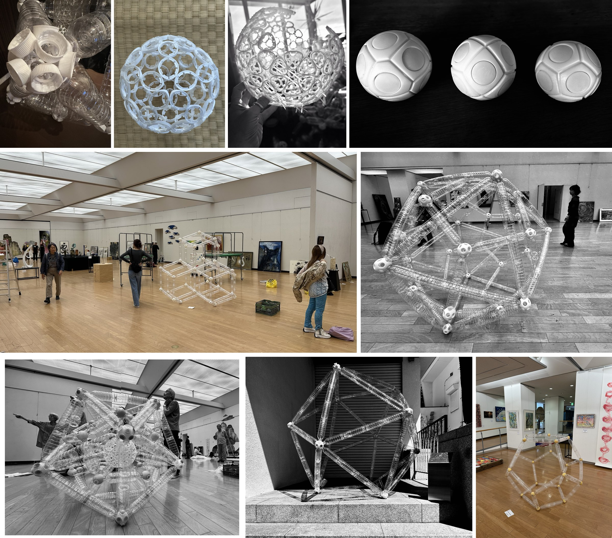
Figure P.1. From the hand to the room. Top: PET-bottle caps; DICTO's OG sphere in cap rings; a Goldberg arrangement mid-build; the three DICTOspheres (cuboctahedron, rhombic dodecahedron, dodecahedron). Middle and bottom: large PET-bottle structures by DICTO; middle left, a tetrapod arrangement at the Kyoto Municipal Museum of Art, 26 October 2026; middle right, 2025; bottom left, 2024; bottom centre, the icosahedron outdoors at the Insho Domoto Museum of Fine Arts, 2025; bottom right, the dodecahedron, 2022. Photographs: DICTO.
Some shapes fill space on their own, like bricks or cubes. Most do not. DICTO's first question was whether any mix of the five Platonic solids (the tetrahedron, cube, octahedron, dodecahedron and icosahedron) can be made to fill space. Paper #47 showed that every mix can, all 31 of them, as long as a small set of seven connector pieces is allowed to plug the gaps.
The icosahedron, the twenty-sided die, is the most stubborn. Put icosahedra in a square grid and two kinds of gap are left over: a squashed icosahedron in the middle, which DICTO called the Unborn, and thin wedges between them, the AXE. The AXE sticks out wherever it is glued. In paper #48, the Golden Split, we cut each AXE into four small pyramids from one inside point and handed each pyramid to the neighbour it touches. At exactly one point, the golden point, nothing sticks out any more: the icosahedra and the Unborns both become neat, convex solids that fill space together. DICTO named them the Icosaxes and the Unborn Axes.
Paper #51, the Delian Bond, did the same with the oldest mixed filling of all: the octet, where tetrahedra and octahedra fill space together. Slide one flat cut through every place where a tetrahedron meets an octahedron, and give each side to its own piece. As the cut slides, one kind grows and the other shrinks, but the two always fill space. At one end the pieces are Kepler's rhombic dodecahedra, at the other end cubes. Halfway, at one exact place, the two pieces weigh the same: the small one has doubled and the large one halved. Doubling is the ancient Delian problem, doubling a cube, and DICTO named this equal pair Samson and Delilah.
Figure P.2. The series as one route, from the octet to every stacking.
2. The web of bonds
Next we stopped looking only at the pieces and looked at who touches whom. Draw a line, a bond, between the centres of every two pieces that share a face. The lines make a web. Paper #52 showed that both of DICTO's families above are really one fixed crowd of points of two kinds, with one number slid between the kinds, like turning a dial. Each piece is simply the region that belongs to its point. As the dial turns, the pieces change shape, but the web changes in only two ways. The bond between a piece of one kind and a piece of the other never breaks. The bonds between pieces of the same kind hand over (one pair of pieces stops touching as another pair starts): in the golden family slowly and smoothly, in the Delian family all at once, at the octet.
The dial has a physical meaning: it is the size of a ball. The golden family is the arrangement of atoms in caesium chloride, the Delian family that of fluorite, and the range where the balls can touch ends exactly at the limits Linus Pauling gave for these crystals.
DICTO guessed that these two ways of handing over would turn up elsewhere. Paper #53 turned the same dial on ten more crystal arrangements and recorded every change exactly. The guess holds: the all-at-once hand-over appears in the square grid with its centres, in the honeycomb and in rock salt; the smooth hand-over appears in zinc blende, in the gaps of the hexagonal stacking, and in two famous metal alloy structures, A15 and C15.
3. Every stacking: the rule of halves
Real crystals rarely stack in only one pure way. They mix: ABAC, ABCACB, and endless others. An early signpost was paper #40, where two short rules placed DICTO's Ogdoecontahedron and its family into the stack of tetrahedra and octahedra, layered in any order, even in a pattern that never repeats.
Paper #57 turned the dial on every stacking at once and found a rule simple enough to say in two sentences. A four-faced (tetrahedral) gap always takes the piece it would have in the pure stacking of the layer it sits closest to. An eight-faced (octahedral) gap sits halfway between two layers, so its piece is two halves: the top half borrowed from the layer above, the bottom half from the layer below. That is all. So every stacking, however long or strange, is built from the pieces of the two pure stackings, and there are only finitely many kinds of piece. Where a cubic layer meets a hexagonal one, pieces appear that are half of one and half of the other, which DICTO named the Janus pieces (after the Roman god who looks both ways), Chucky and Fang.
Figure P.3. The Janus c/h pieces Fang and Chucky, whole and drawn apart: a hexagonal top half (platinum) on a cubic bottom half (gold).
Part I. The laws
Chapter 1. The Rule of Halves: the Holes of Every Close-Packed Stacking
From paper #57, DICTO DOI 10.5281/zenodo.23647898
Theorem: in every close-packed stacking, along the whole weight walk, each tetrahedral hole's piece is the piece of the cubic or the hexagonal stacking named by its nearest layer, and each octahedral hole's piece is a top half and a bottom half, each the half of the cubic or the hexagonal piece named by the layer on that side; so the pieces of all stackings are finite in kind and an octahedral piece's volume is always the mean of its two parents' volumes.
In short. Stack layers of balls and the gaps between them are small octahedra and tetrahedra. Stack them in the cubic way (ABCABC…) or the hexagonal way (ABAB…) and these gaps are arranged differently; crystals also use countless mixed stackings, such as ABAC or ABCACB. In papers #51, #53 and #56 we slid one number, a weight, between the two kinds of gap and followed how space is shared out among them: the web of bonds. Here we follow it on every stacking at once, and find a simple rule. A tetrahedral gap always takes the piece it would have in the pure stacking of the layer it sits closest to. An octahedral gap sits half-way between two layers, and its piece is two halves: the top half is the top half of the cubic or the hexagonal piece, as the layer above decides, and the bottom half likewise from the layer below. So every stacking, of any length or pattern, is built from the two pure ones, and the kinds of piece are finite: we list them all, with exact volumes. Where a cubic layer meets a hexagonal one, octahedral pieces appear that are half cubic and half hexagonal, which DICTO calls the Janus c/h pieces; two of them he named Chucky and Fang; and its volume is exactly the mean of its two parents'. The proof is exact, with one bound done by hand. The rule was not found in the sources checked; its classical counterpart for the balls themselves, that each ball's surroundings are set by its own layer, is the reason the h/c notation of crystallography exists.
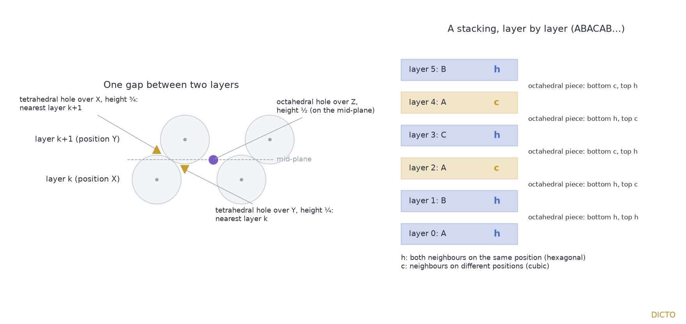
Figure 1.1. Left: one gap and its three holes. Right: a stacking layer by layer; a layer is h when both neighbours sit on the same position, c otherwise; each octahedral piece takes its bottom half from the layer below and its top half from the layer above.
1. Where it started
Paper #56 [1] followed the weight walk of #53 [2] on the hexagonal stacking and found DICTO's Sonsam and Lahdeli, Ian Dury and Blockhead, the hexagonal twins of the cubic pieces of #51 [3]. DICTO then proposed following the web of bonds onto the other close-packed stackings. On the double-hexagonal stacking ABAC and the six-layer ABCACB the walk mixed the cubic and hexagonal pieces and added two pieces neither had, which DICTO named Chucky and Fang; the nine-layer samarium stacking ABACACBCB added nothing new. That pointed to a local rule, which we prove here.
2. The set-up
Each gap gets a share of space; one weight decides how big a share the tetrahedral gaps get; slide it and the shares change shape.
Unit balls sit in close-packed layers (triangular lattices of spacing 1) at heights kd, d = √(2/3); layer k sits on one of the three positions A, B, C, and no two consecutive layers share a position. Layer k is h if layers k − 1 and k + 1 sit on the same position and c otherwise (Jagodzinski's notation [4]). In the gap between layer k (position X) and layer k + 1 (position Y) there are three holes (Figure 1.1): an octahedral hole over the third position Z at height (k + ½)d, a tetrahedral hole over X at height (k + ¾)d and one over Y at height (k + ¼)d. The holes are the sites of a power diagram [5]: each site p, with weight wp, owns the points x for which |x − p|² − wp is smallest; octahedral sites have weight 0 and tetrahedral sites weight λ. The pieces are convex and fill space; two pieces sharing a face are bonded. The walk is λ sliding over −11/24 ≤ λ ≤ 3/8, the range in which, in at least one of the two pure stackings, both kinds of piece are present (the hexagonal tetrahedral pieces shrink to points at −11/24, the cubic ones at −3/8, the octahedral pieces of both at 3/8). On each open stretch of λ between the finitely many stops, where some piece changes its faces, every corner of every piece moves on a straight line (Lemma 1). The pure stackings are the cubic ABC… (all layers c; the octet of #51) and the hexagonal AB… (all layers h; the twinned octet of #56).
Definitions. The walk: for each λ in the range we set wtet = λ, woct = 0 and take the power diagram. A piece: the cell of one hole. A stop: a λ at which some piece gains or loses a face; a stretch: an open interval of λ between consecutive stops. A window: the six layers k − 2, …, k + 3 round the gap of layers k and k + 1, up to relabelling A, B, C; it is fixed by the h/c types of layers k − 1, …, k + 2, so there are 16. The top and bottom halves of an octahedral piece: its parts above and below the horizontal plane through its hole.
3. Main theorem
Theorem (the rule of halves). For every close-packed stacking and every λ with −11/24 ≤ λ ≤ 3/8:
the piece of a tetrahedral hole is congruent to a tetrahedral piece of the pure stacking (cubic if c, hexagonal if h) of the type of its nearest layer: the hole over X, at height (k + ¾)d, is nearest to layer k + 1, the hole over Y to layer k;
the piece of an octahedral hole, cut by the horizontal plane through the hole, has a top half congruent to the top half of an octahedral piece of the pure stacking of the type of layer k + 1, and a bottom half congruent to the bottom half of an octahedral piece of the pure stacking of the type of layer k.
Corollaries. (i) Up to congruence there are finitely many pieces in all close-packed stackings together: 21 combinatorial kinds, listed in the Appendix with exact volumes. (ii) The volume of an octahedral piece is the mean of the volumes of its cubic and hexagonal parents (or equal to the parent's, when both layers have the same type).
The two pure stackings are the only ingredients; every other stacking just decides, layer by layer, which ingredient each half comes from.
4. Proof
Lemma 1 (corners move on straight lines). A corner of a piece is the common point of three dividing planes 2(qi − p)·x = |qi|² − |p|² − wqi + wp. Their normals do not depend on λ and their right-hand sides are affine in λ; on a stretch the same three planes define the corner, and their normals are linearly independent (otherwise they would not meet in a point), so the corner is M⁻¹b(λ), with M the fixed matrix of the three normals and b(λ) affine: affine in λ. At a stop the set of planes through a corner may change, which is why the stretches are treated one by one. □
Step 1: six layers decide. The pieces of the holes of gap k depend only on the layers k − 2, …, k + 3.
(i) Exact computation. Up to relabelling A, B, C, these six layers are fixed by the types of the four inner layers k − 1, …, k + 2: 16 windows. For each we built a periodic stacking containing the six layers and computed its power diagram exactly, in rational arithmetic, over the whole walk (the census engine of #53 [2], which also checks on every stretch that its finite list of sites suffices and that the pieces' volumes add up to the cell's). In every window, on every stretch, every corner of every piece of gap k lies within squared distance ½ of its hole (176 cases; squared distance along a straight path is convex in λ, so the stretch ends suffice).
(ii) By hand. A hole three or more gaps away is at least 2.5d higher or lower than every hole of gap k, so |q − p| ≥ 2.5d, and |wp − wq| ≤ 11/24. Its dividing plane lies at distance (|q − p|² + wp − wq)/(2|q − p|) ≥ ((2.5d)² − 11/24)/(5d) = (89/24)/(5d) from p (the function t ↦ (t² − c)/(2t) increases), whose square is (7921/576)/(50/3) = 23763/28800 > ½. So for every λ no such plane meets the ball of squared radius ½ about p.
(iii) Convexity. Let C be the piece of p computed from the holes of gaps k − 2 to k + 2 only. In any stacking with the same six layers the piece of p is C cut by the planes of farther holes; these miss the ball, and by (i) the piece in the test stacking lies inside the ball; a convex body inside the ball whose boundary there is made of C's planes only is C itself. So all such stackings give the same piece. This holds for every stacking, periodic or not, since any stacking shows one of the 16 windows round each of its gaps. □
Step 2: the 16 windows. For each window, stretch and hole of gap k we searched the 24 rigid motions that fix the hole's vertical axis and map the triangular layers to themselves (the 12 symmetries of the triangular lattice about the axis, with or without the reflection z ↦ −z; they serve only to exhibit congruence). For tetrahedral holes, one such motion carries the corner functions (Lemma 1) of the piece exactly onto those of the stated pure piece: all cases. For octahedral holes, one motion carries the corner functions above, on and below the mid-plane, and the points where edges cross it (exact rational functions of λ), onto those of the stated pure halves: all 160 halves. Equal corner functions give equal pieces for every λ in the stretch. Together: 176 of 176 pieces, 0 failures; no stretch needed to be split where a corner crosses the mid-plane.
Step 3: stops. At a stop each piece is the limit of the pieces on the two adjacent stretches (the engine checks that the limit is the piece computed directly at the stop), so the congruences hold there too. □
The corollaries. (i) follows because the windows are finitely many and so are their stretches. (ii): each pure octahedral piece has a centre of symmetry at its hole (the octet's octahedral holes are centres of inversion, and so are the octahedral holes of hexagonal close packing), and inversion through the hole swaps the two halves, so each half has exactly half the parent's volume; by the theorem the top half of a mixed piece is congruent to the top half of one parent and its bottom half to the bottom half of the other, so its volume is half the one plus half the other. In particular, exactly: Fang = 5√2/324, the mean of the cubic octahedron √2/81 and the hexagonal rhombohedron √2/54; Chucky = 383√2/768, the mean of the cubic rhombic dodecahedron √2/2 and the hexagonal piece 191√2/384.
Limits. The theorem covers −11/24 ≤ λ ≤ 3/8. At the ends of the range, and at −3/8 for the cubic tetrahedral pieces, some pieces shrink to points or edges; there the statement holds with those pieces read as points, as limits of the stretches. Steps 1(i) and 2 are exact computations; Step 1(ii) and (iii) and Lemma 1 are by hand; no floating-point arithmetic enters the proof.
Computational methods. Python with exact rationals (fractions, sympy), using the census engine of #53 [2]: for a periodic stacking it lists the holes within a fixed distance, computes each piece exactly at a rational λ, finds the stretch round it exactly, and expresses every corner as an affine function of λ, with checks that the site list suffices and that the volumes add up to the cell. All scripts and outputs are in the study folder [S]; a fresh copy of the repository on a second computer reproduced every result of Steps 1 and 2 and the exact volumes identically.
Use of AI. The computations, proofs and text were prepared with Claude (Anthropic) under DICTO's direction. An open model run locally (gpt-oss-120b) was used as an independent referee of the proof and of this chapter (it found no mathematical error and asked for clarifications now included) and drafted the order of sections; it wrote none of the final text.
5. The pieces
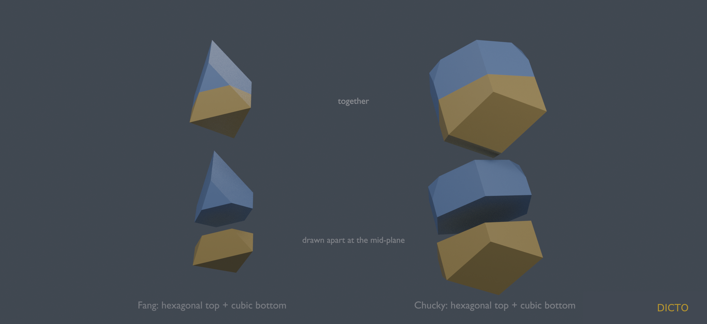
Figure 1.2. Fang (λ = 5/24) and Chucky (λ = −3/8) in the double-hexagonal stacking ABAC: hexagonal top half (blue), cubic bottom half (gold); whole above, drawn apart at the mid-plane below.
Chucky (DICTO's name): the octahedral piece at λ = −3/8 where a hexagonal layer lies above and a cubic layer below; 19 corners, with 3 triangles, 3 squares, 6 pentagons and one nonagon; volume 383√2/768. Fang (DICTO's name): the octahedral piece at λ = 5/24 in the same position; 7 corners, with 4 triangles and 3 squares; volume 5√2/324. Both belong to longer families of mixed pieces along their stretches (Appendix), and the stacking with the cubic layer above and the hexagonal one below gives their mirror images. DICTO calls all the octahedral pieces with one cubic and one hexagonal half the Janus c/h pieces (Janus, the two-faced god of doorways: each looks into one stacking above and the other below); Chucky and Fang are its named members, and two further families, of 9 and of 27 corners, complete it. Triskelion Tetrahedron (TT, DICTO's name): the tetrahedral piece of ABAC at λ = 5/24 with 16 corners (4 triangles, 6 hexagons). By the theorem it is the cubic piece there, a member of the sliding family of Samson in #51 [3]; the name marks that member; volume 79√2/324. The other pieces of the mixed stackings are the cubic and hexagonal pieces of #51 and #56; the two further Janus c/h families live on whole stretches and meet no stop.
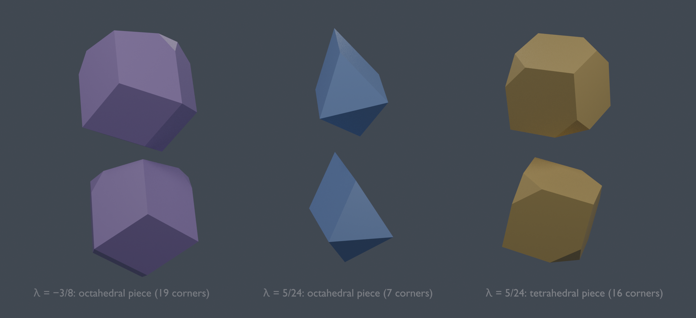
Figure 1.3. The three pieces of ABAC first met in this study, each from two sides: Chucky (19 corners), Fang (7 corners) and TT (16 corners, the cubic piece).
6. What is known, and what was not found
Known and credited. Close-packed stackings and their polytypes, and the h/c notation, whose purpose is that each ball's own surroundings are set by its layer's type [4]; our theorem is the counterpart for the holes, along the whole walk. Power diagrams [5]. The pure octet and twinned octet pieces [1, 3] and the walk [2]. Hales's proof of the Kepler conjecture divides the cubic and hexagonal packings into pieces built from their near-regular tetrahedra and octahedra ("decomposition stars"), for those two packings only [6]. Binary crystals of hard tetrahedra and octahedra: the cubic and hexagonal forms c-OT2 and h-OT2 (in h-OT2 octahedra sit on octahedra), which "can be combined in infinitely many different stacking variants", and small amounts of stacking faults observed in simulation [7]; that study has no cells round the holes and no rule relating mixed stackings to the pure forms. Radical (Laguerre) tessellations of binary hard-sphere crystals [8]. Not found in the sources checked: the pieces of the holes of mixed stackings, their finite catalogue, and the rule of halves. Searched: DICTO's reference library (eight queries on polytypes, hole cells, local environments, Delaunay and Voronoi cells of close packings, parameter families of power diagrams), five web searches, and Hales's three overview papers read for the purpose by a local model, which found no statement on mixed stackings or halves.
7. Open directions
Other weights for the two kinds of tetrahedral hole (a three-kind walk, a map instead of a line), where the rule may split further.
Keyed forms of Chucky and Fang, and a self-keyed Blockhead (#56).
A world in the app to choose any stacking, slide λ and see every piece coloured by its parents.
Appendix: every piece of every close-packed stacking
From appendix.json [S]. Columns: the kind of hole; the stretch of λ (open interval between two stops); what the piece is made from by the theorem (a cubic or hexagonal tetrahedral piece, or the types of an octahedral piece's top and bottom halves); the number of corners and the faces of the piece on that stretch; its exact volume as a function of λ, for balls of diameter 1. At a stop a piece is the limit of the adjacent stretches' pieces.
hole
stretch of λ
made from
corners
faces
volume
tetrahedral
(-11/24, -3/8)
hexagonal piece
4
4 triangles
√2·(24·λ + 11)³/6144
tetrahedral
(-3/8, -1/8)
cubic piece
4
4 triangles
√2·(8·λ + 3)³/96
tetrahedral
(-3/8, -1/8)
hexagonal piece
4
4 triangles
√2·(24·λ + 11)³/6144
tetrahedral
(-1/8, 5/24)
cubic piece
16
4 triangles, 6 hexagons
√2·(512·λ³ - 576·λ² + 216·λ + 69)/384
tetrahedral
(-1/8, 5/24)
hexagonal piece
19
6 triangles, 3 pentagons, 3 hexagons, 1 nonagon
-√2·(1536·λ³ + 5184·λ² - 3384·λ - 1013)/6144
tetrahedral
(5/24, 3/8)
cubic piece
16
4 triangles, 6 hexagons
√2·(512·λ³ - 576·λ² + 216·λ + 69)/384
tetrahedral
(5/24, 3/8)
hexagonal piece
19
9 squares, 4 hexagons
√2·(8·λ + 1)·(64·λ² - 80·λ + 37)/256
octahedral
(-11/24, -3/8)
cubic top + cubic bottom
14
12 squares
√2/2
octahedral
(-11/24, -3/8)
cubic top + hexagonal bottom
19
3 triangles, 3 squares, 6 pentagons, 1 nonagon
-√2·(13824·λ³ + 19008·λ² + 8712·λ - 1741)/6144
octahedral
(-11/24, -3/8)
hexagonal top + cubic bottom
19
3 triangles, 3 squares, 6 pentagons, 1 nonagon
-√2·(13824·λ³ + 19008·λ² + 8712·λ - 1741)/6144
octahedral
(-11/24, -3/8)
hexagonal top + hexagonal bottom
24
6 triangles, 6 hexagons, 2 nonagons
-√2·(13824·λ³ + 19008·λ² + 8712·λ - 205)/3072
octahedral
(-3/8, -1/8)
cubic top + cubic bottom
30
8 triangles, 12 hexagons
-√2·(512·λ³ + 576·λ² + 216·λ + 3)/48
octahedral
(-3/8, -1/8)
cubic top + hexagonal bottom
27
7 triangles, 9 hexagons, 1 nonagon
-√2·(46592·λ³ + 55872·λ² + 22536·λ - 13)/6144
octahedral
(-3/8, -1/8)
hexagonal top + cubic bottom
27
7 triangles, 9 hexagons, 1 nonagon
-√2·(46592·λ³ + 55872·λ² + 22536·λ - 13)/6144
octahedral
(-3/8, -1/8)
hexagonal top + hexagonal bottom
24
6 triangles, 6 hexagons, 2 nonagons
-√2·(13824·λ³ + 19008·λ² + 8712·λ - 205)/3072
octahedral
(-1/8, 5/24)
cubic top + cubic bottom
6
8 triangles
-√2·(8·λ - 3)³/192
octahedral
(-1/8, 5/24)
cubic top + hexagonal bottom
9
5 triangles, 3 pentagons
-√2·(6656·λ³ - 14400·λ² + 6840·λ - 955)/6144
octahedral
(-1/8, 5/24)
hexagonal top + cubic bottom
9
5 triangles, 3 pentagons
-√2·(6656·λ³ - 14400·λ² + 6840·λ - 955)/6144
octahedral
(-1/8, 5/24)
hexagonal top + hexagonal bottom
12
2 triangles, 6 pentagons
√2·(1536·λ³ + 5184·λ² - 3384·λ + 523)/3072
octahedral
(5/24, 3/8)
cubic top + cubic bottom
6
8 triangles
-√2·(8·λ - 3)³/192
octahedral
(5/24, 3/8)
cubic top + hexagonal bottom
7
4 triangles, 3 squares
-5·√2·(8·λ - 3)³/768
octahedral
(5/24, 3/8)
hexagonal top + cubic bottom
7
4 triangles, 3 squares
-5·√2·(8·λ - 3)³/768
octahedral
(5/24, 3/8)
hexagonal top + hexagonal bottom
8
6 squares
-√2·(8·λ - 3)³/128
Chapter 2. DICTO Janus c/h Pyrochlore
From paper #60, DICTO DOI 10.5281/zenodo.23678750
The rule of halves of #57 carried to the pyrochlore network, its layers stacked in any order
In short. The pyrochlore network is made of small tetrahedra that touch only at their corners. It hides inside every diamond-like crystal: take the middle of every bond, and the four middles round each atom make one of these tetrahedra. Diamond-like crystals can stack their layers in many orders, so the pyrochlore network can too. We share out all of space round it by one weight, as in #57, and prove the same rule: every piece is borrowed, whole or in half, from the pure cubic or the pure hexagonal stacking.
1. The idea
DICTO's idea (27 October 2026): "close packing halves rule pyrochlore network" — the rule of halves of #57 (DICTO DOI 10.5281/zenodo.23647898) on the pyrochlore network, its layers (kagome and triangular, seen down a three-fold axis) stacked in any order. The series paper #58 (DICTO DOI 10.5281/zenodo.23665944) tells the road to #57.
2. Main theorem
Theorem. In every close-packed stacking, and for every weight λ from −11/36 to 1/4, divide space by weight among the balls and diamond atoms (weight λ) and the two empty holes of each gap (weight 0). Then every piece is a piece of a pure stacking: a ball's piece is the ball piece of its own layer's pure stacking (cubic if the layer is c, hexagonal if h); a diamond atom's piece that of its nearest layer; and each hole piece, cut at its gap's mid-height, is a bottom half from the layer below and a top half from the layer above.
Where a cubic layer meets a hexagonal one, the hole pieces are therefore Janus c/h pieces, as in #57: a cubic half glued to a hexagonal half (in 4H, octahedral pieces of volume 0.346 and 0.325, beside 0.339 in the cubic and 0.332 in the hexagonal stacking). The tetrahedra of the network — the pieces of the balls and diamond atoms — are always whole, each from one layer; the Janus pieces are the network's open spaces.
2a. Proof
The proof follows #57 and uses its exact engine unchanged (rational arithmetic throughout).
Locality. Near any gap, a stacking is fixed by the cubic or hexagonal type of the four layers round it: sixteen windows. Every corner of every piece of the central gap lies within squared distance 11/32 of its site (exact, at the ends of every stretch; convexity). A site whose letter the window does not fix is at least 2¼ layer spacings away in height, and the weights differ by at most 11/36, so its dividing plane stays at squared distance at least ((27/8 − 11/36)/(2·√(27/8)))² ≈ 0.698 from the site: it cannot touch the piece. So each piece is the same in every stacking that shares its window.
Pieces along every stretch. On each stretch of the walk (stops −11/36, −1/4, −3/20, 0, 1/8, 1/6, 1/4) every corner of every piece moves on a straight line in λ. For each of the sixteen windows and each stretch, one symmetry of the layer carries the corners of each whole piece (ball, diamond atom) onto those of its pure piece, and the corners above, on and below the mid-plane together with the cut points (exact rational functions of λ) of each half (octahedral and Y holes) onto those of its pure half: 384 of 384. As an independent check, the pieces are congruent to their pure pieces at twelve exact weights covering every stretch: 768 of 768.
3. Construction
Balls of spacing 1 in close-packed layers √(2/3) apart, stacked by a word in A, B, C. The diamond-type crystal (as silicon carbide) is the balls plus #57's tetrahedral hole "over X at 3/4" above each ball. The middles of its bonds form the pyrochlore network: round each atom four middles make a regular tetrahedron of edge 1/2, and every corner belongs to exactly two tetrahedra (checked for 3C, 2H, 4H and 6H). Each gap holds four sites: the ball S, the diamond atom C, the octahedral hole O and the other tetrahedral hole Y; the two empty holes are exactly the network's open spaces.
4. The weight walk
Computed exactly with #57's census engine, unchanged (rational arithmetic; every built-in check passed).
Cubic (3C). Stops at −3/8 (the atoms' pieces vanish), −1/4 (atoms regular tetrahedra, holes truncated tetrahedra of volume 23√2/96: the classical tetrahedral–truncated tetrahedral honeycomb), +1/4 (the roles swap: atoms truncated tetrahedra, holes tetrahedra), and +3/8 (the holes' pieces vanish).
Hexagonal (2H). Stops at −11/36, −1/4, −3/20, 0, 1/8, 1/6 and 1/4. At −1/4 the diamond atoms' pieces are still regular tetrahedra but the balls' pieces have ten corners: the regular pyrochlore tetrahedra are exact pieces only on cubic layers.
Figure 2.1. The network's pieces at λ = −1/4 in the cubic (gold), hexagonal (platinum) and mixed 4H stackings; open spaces left out.
5. Prior art and credit
The pyrochlore lattice as the bond-middle lattice of diamond, and as alternating kagome and triangular layers along a three-fold axis, is standard in the physics of frustrated magnets; the cubic and hexagonal stackings of diamond-type crystals (diamond and lonsdaleite, zincblende and wurtzite) are standard; the tetrahedral–truncated tetrahedral honeycomb is classical; the rule of halves is #57 (DICTO). Not found in the sources searched (a library of 302 references, and the web, 27 October 2026): the rule of halves for pyrochlore stackings, or this weighted division of them.
6. Methods and data
Study folder k-research studies/2026-10-27-pyrochlore-halves: pyro.py (construction), cells.py and halves.py (float division and halves), pyro_walk.py (exact walks with #57's engine), pyro_exact.py and pyro_stretch.py (the proof), figures.
7. Name
Title by DICTO: DICTO Janus c/h Pyrochlore — the pyrochlore network whose pieces, like #57's Janus c/h pieces, are borrowed from the cubic (c) and hexagonal (h) stackings.
Chapter 3. The Swap Rule
From paper #61, DICTO DOI 10.5281/zenodo.23682596
Ganesha, the Janus tetrahedra of squashed stackings, and the border at true close packing
Abstract. Stack layers of balls, cubic or hexagonal in any order, and share the space between the balls' holes by weight: each hole gets a piece. Paper #57 showed that at true close packing an octahedral piece is two halves, each borrowed from a pure stacking, while a tetrahedral piece is borrowed whole from its nearest layer. Here the layers are squashed or stretched. We prove that for every layer spacing from half the close-packed squash upwards, every hole piece, tetrahedral ones included, is a top half from the pure stacking of the layer above and a bottom half from the pure stacking of the layer below. Two consequences follow. The Swap Rule: the two mixed pieces always add up to the two pure ones. And a sharp border: the tetrahedral pieces are whole exactly when the layers are at least as far apart as in true close packing; squash them even slightly and each mixed tetrahedral piece gets its head from one side and its body from the other. DICTO calls these pieces Ganesha. Below half the squash the halves stop being pure, yet the Swap Rule for volumes still holds, down to a quarter of the squash exactly. The rule was found by DICTO's idea of looking for simple rules in pictures of computed values; a map of eleven spacings shows where each rule holds.
1. The idea
DICTO's idea (27 October 2026): the rule of halves of #57 (DICTO DOI 10.5281/zenodo.23647898) was spotted in a picture of computed values; other such pictures may hide other simple rules (halves, thirds, ...). A rule finder was built to look for them (Splash Rules, study 2026-10-27-splash-rules). Its first run, on the #57 walk with the layer spacing changed, found a rule nobody had looked for: when the layers are squashed, the mixed tetrahedral pieces stop being whole, yet their volumes still add up exactly. DICTO named the rule the Swap Rule and the new pieces Ganesha, after the god whose head was swapped.
2. Set-up
Balls of spacing 1 lie in triangular layers at positions A, B, C, stacked by a word with no letter twice in a row; the layer spacing is d, with d² = s·⅔ (s = 1 is true close packing). Each gap between a layer X and the next layer Y holds three holes per cell: an octahedral hole over the third position at mid-gap, a tetrahedral hole over X at ¾ of the gap and one under Y at ¼. As in #57 the octahedral holes get weight 0 and the tetrahedral holes weight λ, and space is divided by power distance (a Laguerre or power diagram); each hole's share is its piece. A layer is c (cubic) if its two neighbours differ, h (hexagonal) if they are equal; the pure stackings are ABC (all c) and AB (all h).
3. Main theorem
Theorem. Let s ≥ ½. Put λ₋(c) = −¼ − s/8, λ₋(h) = −⅓ − s/8 and U(s) = min(⅓ + s/24, 3s/8). In every close-packed stacking, periodic or not, take any hole piece of a gap whose lower layer has type t and upper layer type t′, at any λ with max(λ₋(t), λ₋(t′)) ≤ λ ≤ U(s). Cut it by the horizontal mid-plane of its gap. The part below is congruent to the lower half of the piece of the same kind in the pure stacking of type t, and the part above to the upper half of that piece in the pure stacking of type t′. This holds for all three kinds of hole piece.
The weight range contains the whole walk of the cubic stacking for every s ≥ ½, and the whole walk of every stacking for s ≥ 1.
Corollary 1 (the Swap Rule). Write V(t|t′) for the volume of a piece over a t layer and under a t′ layer. Then, for all three kinds of piece, V(c|h) + V(h|c) = V(c|c) + V(h|h).
Proof: V(t|t′) = L(t) + R(t′) with L and R the pure lower and upper half volumes; both sides equal L(c) + L(h) + R(c) + R(h).
Corollary 2 (the border at true close packing). For s ≥ 1 the far half of a tetrahedral piece is the same over a c layer as over an h layer, so the piece is borrowed whole from its nearest layer, as in #57. For every s with ½ ≤ s < 1 there is a weight in the cubic walk where the far half over a c layer is a proper part of the far half over an h layer, with strictly smaller volume: the mixed tetrahedral pieces are then Janus c/h pieces in their own right. These are the Ganesha pieces.
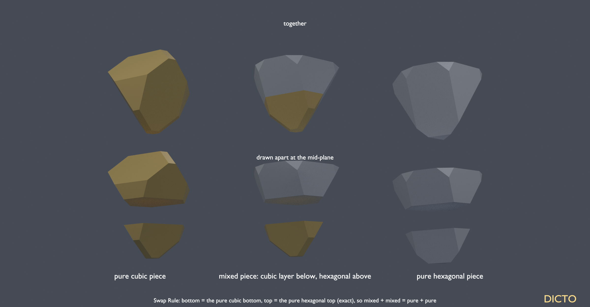
Figure 3.1. Ganesha. Left, the pure cubic tetrahedral piece (gold); right, the pure hexagonal one (platinum); middle, a mixed piece of the stacking ACBC (cubic layer below, hexagonal above), whole (top) and drawn apart at the mid-plane (bottom): its bottom is the cubic bottom, its top the hexagonal top. Layer spacing² = ¾·⅔, λ = 1/10; volumes of the parts 0.058005 and 0.196269.
Corollary 3 (4 : 5 : 6). At true close packing, for 5/24 < λ < 3/8 the three octahedral pieces (cubic, Janus, hexagonal) have volumes in the exact ratio 4 : 5 : 6 and vanish together at λ = 3/8. Near the end of the walk each octahedral piece is cut out by its tetrahedral neighbours only. In the cubic stacking it has 8 of them, one on each face, and is a regular octahedron |x| + |y| + |z| ≤ 1 (volume 4/3 at that scale); in the hexagonal stacking the octahedral holes sit face to face along the stacking axis, only 6 tetrahedral neighbours remain, and the piece is the rhombohedron |x + y − z|, |x − y + z|, |−x + y + z| ≤ 1 (volume 2). Hence 4 : 6, and the Janus piece, half of each, gives 5.
4. The map
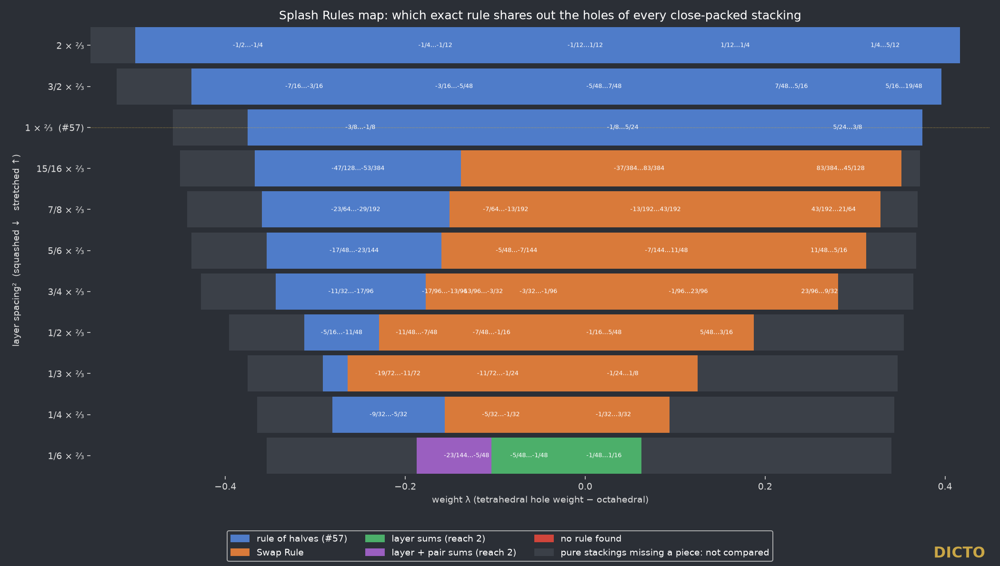
Figure 3.2. Which exact rule shares out the holes, for eleven layer spacings (rows; squashed below, stretched above; #57 dotted) and every window of the weight walk (columns). Blue: rule of halves only. Orange: Swap Rule with Ganesha pieces. Green and purple (s = 1/6): pieces reach two gaps; each volume is a sum of one share per layer reached (green), plus one share per neighbouring pair of layers (purple). Grey: a pure stacking lacks the piece, nothing to compare. Every window has a rule. Stackings with up to six layers; all values exact.
The map was made by the rule finder: each piece is labelled by the layer pattern around it, the shortest label that fixes its exact volume is found, and each volume is fitted exactly as a combination of the pure ones. At every spacing tested from 15/16 down to ¼ the Swap Rule appears, so it switches on as soon as the layers come closer than true close packing; the theorem proves this for s ≥ ½.
5. Proof
One polyhedron for everything. Use lateral coordinates x, y, the height ζ in layer spacings and q = d² = 2s/3, and put u = q·ζ. Then every power-distance comparison between two holes becomes a linear inequality in the five variables (q, λ, x, y, u). So a piece, its cut at the mid-plane (u ≤ q/2) and the whole range of spacings and weights (q ≥ ⅓, λ₋ ≤ λ ≤ U, all linear in q) form one convex polyhedron in five dimensions.
Locality, for all spacings at once. The lower half of a piece is fixed by the holes of its own gap and of the gap below, which depend only on the type t of the lower layer. That no other hole of any stacking cuts into it is a linear statement on the polyhedron, proved by one exact Farkas certificate per outside hole: 1070 certificates, all checked in exact rational arithmetic, covering every s ≥ ½ (s → ∞ included) and every λ in range. Lateral and vertical domination arguments reduce the outside holes to finite lists. The upper half follows by the mirror ζ → 1 − ζ.
Range of the walk. Summing bisector inequalities against neighbours whose weighted offsets cancel shows when a piece must be empty; this gives the bounds λ₋ and U (four cases, symbolic in q and λ).
Border. For q ≥ ⅔ (s ≥ 1), 38 certificates show that the holes of the gap below never reach a tetrahedral piece's far half, so it is the same for c and h. For ½ ≤ s < 1, six holes present only below a c layer cut the h far half (the cutting function is 1/12 or 1/6 at s = ½, 0 at s = 1, and concave), twelve holes present only below an h layer do not cut the c far half, and interior points are exhibited: the c far half is a proper part of the h far half.
Sharpness. At s = ½ exactly, the octahedral hole of the next gap first reaches past the mid-plane (the cutting function is 0 there and positive just below). At s = 2/5 the exact engine finds halves that are not the pure ones, and above U(s) (s = ¾, λ = 5/16) the halves rule and the Swap Rule both fail. As an independent check, the engine of #57, rebuilding whole stackings from scratch, agrees with the theorem in 4992 of 4992 exact comparisons (six stackings, s = ½, 5/8, ¾, 1, 3/2, 2).
6. Below half the squash
Below s = ½ the halves are no longer pure, yet the Swap Rule for volumes still holds.
Theorem 2. For ¼ ≤ s < ½ and every λ up to 3s/8, in every close-packed stacking, each hole piece has volume V(t|t′) = A(t) + B(t′): one term fixed by the lower layer's type, one by the upper layer's. Hence the Swap Rule V(c|h) + V(h|c) = V(c|c) + V(h|h) holds for every s ≥ ¼. The bound ¼ is exact.
Why. Below s = ½ the octahedral hole of the next gap reaches across the mid-plane and carves a fixed piece D out of the lower part of this gap's octahedral and tetrahedral pieces, but only when the layer it shares is cubic. D lies against the mid-plane, out of reach of every hole of the gap below that differs between a cubic and a hexagonal layer, so it is the same piece whatever the far layer is. The lower part of a piece is therefore the pure lower half minus D when the upper layer is c; by the mirror, the upper part is the pure upper half minus a second fixed piece when the lower layer is c. Each correction is one constant per cubic layer, so the volume stays a sum of one share per layer. The halves fail only because D sits on one side of the mid-plane: in the pure cubic stacking every piece loses it, in a mixed one only some do. In exact numbers, at s = 2/5 and λ = −29/100 the octahedral pieces move δ = 2/3125 across the mid-plane inside the same piece, and the two mixed tetrahedral pieces carry +7/37500 and −7/37500, which cancel in the sum.
Proof. The same five-variable polyhedron as in §5, now for q from 1/6 to ⅓: 1706 exact Farkas certificates show that no other hole cuts a lower part and that, on each carved region, every hole that differs between c and h is inactive. At s = ¼ exactly, every hole two gaps away stops cutting (13 critical cases; the cutting function is 0 at q = 1/6 and changes sign there). At s = 1/5 the exact engine shows octahedral volumes depending on all four layers round the gap and tetrahedral ones on three, so the two-type rule fails. At s = 1/6 the pieces reach two gaps and the layer-sum rules of Figure 3.2 take over.
7. Prior art and credit
Power diagrams are affine in the weights, and absorbing the layer spacing into the weights (u = q·ζ) is that standard fact used once more; Farkas certificates are textbook linear programming. The rule of halves and the Janus c/h pieces Chucky and Fang are DICTO's #57. No source checked states a halves rule or a Swap Rule for hole pieces, or treats the layer spacing as a parameter of the hole power diagram.
8. Conclusion
True close packing is a border. At or above it, the holes of any stacking are shared out by the rule of halves of #57, and the tetrahedral pieces are whole. Below it, down to half the squash, every hole piece is a top from one pure stacking and a bottom from the other; the mixed tetrahedra become Ganesha pieces, and the two mixed pieces always add up to the two pure ones. Further down, to a quarter of the squash, the halves give way but the sums do not. However the layers are stacked, the space is still built from the halves of two pure orders.
Chapter 4. The Swap Rule in Crystals
From paper #64, DICTO DOI 10.5281/zenodo.23709753
Rock salt, cadmium iodide, zinc blende and the Laves phases on every stacking
Abstract. Many crystals come in a cubic and a hexagonal form that differ only in how their layers are stacked, and in many mixed stackings between them. Paper #57 found that at close packing the space of every stacking is shared out into pieces borrowed from the two pure stackings, whole or in halves (the rule of halves), and #61 proved the Swap Rule: the two mixed pieces always add up to the two pure ones. Here we take both rules to four classical crystal families and prove, exactly, that the Swap Rule holds in all four, in all 299 cases where it can be tested: rock salt and nickel arsenide (NaCl, NiAs), the half-filled layers of cadmium chloride and cadmium iodide (CdCl₂, CdI₂), zinc blende and wurtzite with two different atoms (ZnS), and the Laves phases (MgCu₂, MgZn₂, MgNi₂). The rule of halves holds in full for rock salt and cadmium iodide: each octahedral piece is exactly half cubic and half hexagonal, each ball and tetrahedral piece is borrowed whole from the layer it rests on. In zinc blende the atoms keep the rule of halves, while the empty holes stop being fixed mixtures and still swap exactly. In the Laves phases, near the real alloys, every stacking is cut into exactly the same pieces.
1. The idea
DICTO's rule of halves (#57) and Swap Rule (#61) were found on the plain close-packed stacking of equal balls. DICTO asked whether they belong to that one structure or to stacking itself. The test is to fill the holes of the stacking with atoms as real crystals do, and to ask the same two questions of every resulting piece: is it borrowed from the pure cubic and hexagonal stackings, and do the mixed pieces always add up to the pure ones?
2. Set-up
A close-packed stacking is a word in the layer positions A, B, C; each layer is cubic (c) when its two neighbours differ and hexagonal (h) when they are the same. Every gap between two layers X and Y has a ball site at its foot, two tetrahedral sites (one over Y at ¼ of the gap, one over X at ¾) and one octahedral site (over the third position at ½). A crystal family fills some of these sites with atoms. Its space is shared out by weight (a power diagram, as in #57): atoms of one kind have weight λ, empty holes weight 0, and λ runs over the whole range in which every site keeps a piece. The four families:
Family
Atoms (weight λ)
Empty (weight 0)
Pure cubic / hexagonal
Rock salt / NiAs
balls, octahedral sites
tetrahedral sites
NaCl / NiAs
CdCl₂ / CdI₂
balls, octahedral sites in every other gap
tetrahedral sites, the other octahedral sites
CdCl₂ / CdI₂
Zinc blende / wurtzite
balls (λ), one tetrahedral site per gap (λ + μ, a second atom; μ = ±1/20, ±1/10)
octahedral and the other tetrahedral sites
ZnS sphalerite / wurtzite
Laves phases
big atoms on the diamond-type sites (λ)
— (small atoms, weight 0: a kagome of three and one more per gap)
MgCu₂ (C15) / MgZn₂ (C14); MgNi₂ (C36) mixed
The Laves network is built on every stacking by one rule (§5) and checked exactly: every small atom has 6 small and 6 big neighbours (an icosahedron), every big atom 4 big and 12 small, at squared distances ¼, 11/32 and 3/8 (ball spacing 1), the ideal Laves geometry. On the cubic stacking it is exactly MgCu₂.
3. Main theorem
Theorem. In each of the four families, on every close-packed stacking of up to six layers (all of them, up to symmetry; odd ones doubled for CdCl₂/CdI₂) and at every weight λ of its range, every piece has its volume fixed by the layers round its gap (four layers; six for the Laves foot atom), and
(1) Swap Rule. For every kind of piece whose volume is fixed by the types of its two neighbouring layers, V(c under h) + V(h under c) = V(c under c) + V(h under h): 299 of 299 cases, none failing. (Not testable: 40 zinc blende cases where a piece vanishes in one pure stacking, and the Laves foot atom above λ = 17/96, which reads three layer types.)
(2) Rule of halves, rock salt and cadmium iodide. Every octahedral piece, filled or empty, is exactly half the cubic piece and half the hexagonal piece. Every ball takes the pure piece of its own layer's type, and every tetrahedral piece that of the layer holding its base.
(3) Zinc blende. The balls and the second atoms keep the rule of halves (the balls in 40 and the second atoms in 34 of the 43 windows where both pure pieces exist; the balls are undetermined in the other 3), the empty octahedral holes are a fixed cubic–hexagonal mixture in only 4 of the 43, yet every piece swaps exactly.
(4) Laves phases. For −11/32 < λ < 17/96, which contains the plain Voronoi cells of the real alloys (λ = 0), every Laves stacking is cut into exactly the same pieces: the cubic and hexagonal pieces are equal. Above 17/96 five of the six kinds of piece keep the rule of halves and swap exactly; the big atom at the foot of each gap reads three layer types, not two.
4. The results family by family
Family
Weight range
Windows
Swap Rule
Rule of halves
Rock salt / NiAs
−3/8 to 3/8
5
20 of 20
in full: octahedral ½c + ½h, balls and tetrahedral whole
CdCl₂ / CdI₂
−3/8 to 3/8
10
80 of 80
in full, filled and empty octahedral sites alike
Zinc blende / wurtzite, four values of μ
within −3/8 to 3/8
53
172 of 172
atoms yes; empty holes mostly not fixed mixtures
Laves phases
−11/32 to 11/32
5
27 of 27
identical pieces below 17/96; above, 5 of 6 kinds
The rock salt and cadmium iodide pattern is exactly #57's: three balls from each side make an octahedral piece half of each, a tetrahedral piece with its base in one layer belongs to that layer. Zinc blende repeats what #61 found below half the squash: the Swap Rule outlasts the rule of halves, because each piece's volume stays a sum of one share from each neighbouring layer even when the shape is no longer a fixed mixture.
5. The Laves network on every stacking
In each gap X, Y (third position Z) the big atoms sit over X at 0 and ¾ of the gap, as the diamond-type atoms of #60; the small atoms form a kagome over X shifted by half a ball spacing, (½, 0), (0, ½), (½, ½), at ⅜, and one more over Z at ⅞. On the cubic stacking this rule gives the same small atoms as the classical construction of MgCu₂ (each empty hole of the big-atom diamond surrounded by an inverted tetrahedron of small atoms), checked exactly; on the hexagonal stacking it gives MgZn₂, and on every stacking up to six layers it gives the ideal Frank–Kasper neighbourhoods, with the next neighbours clearly farther (squared gap 31/96 or more).
6. Proof
For each family and each stacking word we run the exact weight walk of #57 (rational arithmetic throughout): it finds every λ at which some piece changes its combinatorial type and, between these stops, every piece's volume as an exact polynomial in λ, with the engine's own checks (pieces tile the cell, faces matched, distance bounds) — no check failed. Locality: two stackings that agree on the four layers round a gap (six for the Laves foot atom) give the same volume, every time (0 clashes). Each piece's volume is then compared, as a polynomial, with a·V(cubic) + b·V(hexagonal) for constant rational a, b (the rule of halves), and the swap sum is checked as a polynomial identity. Scripts and logs: study 2026-10-27-splash-rules, run2/ (rocksalt_mix.py, cdi2_mix.py, zincblende_mix.py, laves_net.py, laves_mix.py, laves_mix6.py).
7. Prior art and credit
Polytypes are classical: Ramsdell's notation (3C, 2H, 4H …) and the c/h notation of Jagodzinski; the cubic and hexagonal forms of ZnS, SiC, CdI₂ and the NaCl–NiAs pair (Verma and Krishna, Polymorphism and Polytypism in Crystals, 1966). The Laves phases C15, C14 and C36 are polytypes of one common slab, with c, h and ch stackings, and are built from Z12 and Z16 Frank–Kasper clusters. A study of block-polymer Laves phases found the free energy of C36 to be almost exactly the average of C14 and C15, a statement of the same shape as the Swap Rule, but for energies and not proved exactly. The weight walk, the rule of halves and the Swap Rule are #57 and #61. We found no earlier statement that the pieces of these crystals obey the rule of halves or the Swap Rule exactly.
8. Conclusion
The Swap Rule is not a property of one packing. In rock salt, cadmium iodide, zinc blende and the Laves phases, on every stacking, the two mixed pieces add up to the two pure ones, exactly, in every one of the 299 cases where both pure pieces exist and two layer types fix the piece. Where atoms sit in octahedral sites the pieces are DICTO's Janus halves, as at close packing; where the holes stay empty the shapes may wander but the volumes still swap; and in the Laves phases the stacking, near the real alloys, makes no difference to the pieces at all. One rule runs through all four families.
Chapter 5. The Focus
From paper #66, DICTO DOI 10.5281/zenodo.23717687
One study of space in pieces, and the Hexagonality Law
Abstract. DICTO concluded that “everything is the same study now: all aspects of everything we have been looking at have come to a focus”. This chapter sets out the new theorem that ties the flat stackings together. Stack equal balls in layers, each layer cubic or hexagonal by its neighbours, and share space out among the balls and the holes between them by weight, as real crystals do. The Hexagonality Law: in every stacking, each kind of piece totals exactly what its layers would hold in their own pure stackings, so the total is a straight line in the number of hexagonal layers, whatever their order. We prove it from the Swap Rule (#61) wherever a piece is fixed by its two neighbouring layers, show that it is equivalent to the Swap Rule there, and check it exactly in 1064 cases across pyrochlore, rock salt, cadmium iodide, zinc blende and the Laves phases, with no failure; in cadmium iodide, whose filled and empty layers alternate, it holds for each kind of layer separately. It holds even for the one Laves piece that reads three layers, where it is not yet proved. In the physics of stacking variants, straight-line laws in the hexagonality have been measured for sixty years; this is an exact geometric law of that form.
1. The focus
Over the last papers the threads of this work converged: the rule of halves for stackings of balls (#57), its pyrochlore and crystal forms (#60, #64) and the Swap Rule (#61). DICTO concluded that “everything is the same study now: all aspects of everything we have been looking at have come to a focus”. The common thread is that space in the flat stackings is shared out into a few kinds of pieces built from the tetrahedron and the octahedron, whole or in halves, and that when a stacking changes, pieces change by swapping. This chapter proves the theorem that makes “change by swapping” exact for the stackings: the Hexagonality Law (§3).
2. Stackings, layers and pieces
Close-packed layers of equal balls sit in three positions A, B, C, and each new layer sits on the one below in one of the two other positions, so a stacking is a word such as ABC (cubic, 3C), AB (hexagonal, 2H) or ABCB (4H). Each layer is cubic (c) when its two neighbours differ and hexagonal (h) when they are the same: Jagodzinski's notation. In a stacking with period n, nc layers are cubic and nh hexagonal; the hexagonality is nh/n. Every gap between two layers holds a ball site at its foot, two tetrahedral sites and one octahedral site. A crystal family fills some of these sites with atoms, and space is shared out among all sites by weight, in a power diagram, as in #57 and #64: atoms of one kind have weight λ (zinc blende's second atom λ + μ), empty holes weight 0. Each site's cell is a piece, and its role is its kind of site (ball, octahedral, one of the tetrahedral sites; for the Laves phases the six sites of their net, #64). Everything is exact in rational arithmetic, with volumes as polynomials in λ.
3. The Hexagonality Law
Theorem (Hexagonality Law). Let a role have, in the gap between layers of types x (below) and y (above), a piece of volume F(x, y), the same in every stacking. Then the following are equivalent: (i) the Swap Rule F(c, h) + F(h, c) = F(c, c) + F(h, h); (ii) in every stacking, the total volume of the role over one period is T = nc·F(c, c) + nh·F(h, h). So each layer holds, in every stacking, exactly what it holds in the pure stacking of its own type, and the total per layer is the straight line F(c, c) + (nh/n)·(F(h, h) − F(c, c)) in the hexagonality.
Proof. (i) ⇒ (ii). Put g(c) = 0, g(h) = F(c, h) − F(c, c) and f(x) = F(x, c). Then F(x, y) = f(x) + g(y) for all four pairs: for (x, c) by definition, for (c, h) by definition, and for (h, h) by the Swap Rule, since f(h) + g(h) = F(h, c) + F(c, h) − F(c, c) = F(h, h). Summing over the n gaps of one period, gap k between layers k and k + 1, gives T = Σk f(tk) + Σk g(tk+1) = Σk (f + g)(tk), because the period closes up. As (f + g)(c) = F(c, c) and (f + g)(h) = F(h, h), T = ncF(c, c) + nhF(h, h). (ii) ⇒ (i). The stacking ABCB (4H) has layer types alternating h, c, so its four gaps are (h, c), (c, h), (h, c), (c, h) and T = 2F(h, c) + 2F(c, h); (ii) gives T = 2F(c, c) + 2F(h, h). ∎
Two kinds of layer. In cadmium chloride and cadmium iodide the octahedral sites are filled in every other gap only, so the layers come in two kinds, alternating. The same proof, with f and g allowed to depend on the kind, gives T = f(c)nc′ + f(h)nh′ + g(c)nc″ + g(h)nh″, where ′ and ″ count the layers of each kind: the law holds for the hexagonality of each kind of layer separately. A single hexagonality is not enough there: it fails exactly for the stackings ABCB and ABCBAB, the two in which the two kinds of layer have different hexagonalities.
Exact check. For every family of the crystal runs of #60 and #64, every close-packed stacking up to six layers (AB, ABC, ABCB, ABACB, ABCBAB, ABCACB, up to symmetry), every window of the weight λ and every role, we took the total volume over one period from the exact weight walks and tested it against nc·T(ABC)/3 + nh·T(AB)/2, as an identity of polynomials in λ.
(In cadmium iodide a single hexagonality was also tested, in 320 cases: 74 fail, all in ABCB and ABCBAB, as the two-kinds statement predicts.) The theorem's hypothesis, that a piece is fixed by its two neighbouring layers, was checked in #64 for every role except the Laves foot atom above λ = 17/96, which reads three layer types. For that role the law holds in every test above, but the proof does not apply: it is an open problem whether it holds for every stacking.
4. Physics
In the physics of stacking variants (polytypes), a property of a crystal is written as a sum over its layers, with terms for each layer alone and for pairs of layers further apart: the axial next-nearest-neighbour Ising (ANNNI) picture of Heine and coworkers for silicon carbide (Cheng, Needs and Heine, 1988). In that language the Hexagonality Law says that for the volume of every piece the pair terms are exactly zero: each layer contributes alone. Straight-line laws in the hexagonality are classical in measurement. The indirect band gap of the silicon carbide polytypes rises with the hexagonality, roughly in a straight line (Choyke, Hamilton and Patrick, 1964), and basal lattice constants of metallic polytypes correlate linearly with it; later work finds these laws approximate. The Hexagonality Law is an exact geometric law of the same form, for the space each atom and hole occupies. We make no claim that it explains the measured laws; it is a candidate for an exact part of them. One further echo, of form only: causal dynamical triangulations build spacetime in slabs between slices, from simplices typed by how they meet the slice above and the slice below, as our pieces are typed by the layers above and below their gap.
5. Conclusion
Space in flat stackings is shared out into a few kinds of pieces built from the tetrahedron and the octahedron, whole or in halves, and when a stacking changes, the pieces change by swapping, never by appearing from nothing. For the stackings the last clause is now a theorem: the Swap Rule is exactly the statement that every layer keeps, in every stacking, what it holds in its own pure stacking, so every kind of piece totals a straight line in the hexagonality. It holds in every crystal family we have computed, and in cadmium iodide for each kind of layer.
6. Prior art and credit
Jagodzinski's c/h (h/k) notation, the hexagonality and the polytypes are classical (Verma and Krishna, Polymorphism and Polytypism in Crystals, 1966). The ANNNI description of polytype energies is Heine's (Cheng, Needs and Heine, 1988). Linear trends of band gaps and lattice constants in the hexagonality are measured results (Choyke, Hamilton and Patrick, 1964), and an Ising-type additivity model has been used to estimate the band gaps of long polytypes (arXiv 2306.17756). We found no statement that the volumes of the weighted pieces of a close-packed stacking are exactly linear in the hexagonality, or that this is equivalent to the Swap Rule. The rule of halves and the Swap Rule are #57, #61 and #64.
Chapter 6. Random Stackings and Stacking Faults
From paper #67, DICTO DOI 10.5281/zenodo.23718636
The Hexagonality Law at work: colloids, ice and the faults of crystals
Abstract. The Hexagonality Law (#66) says that in a stacking of close-packed layers, where space is shared out by weight among atoms and holes, each kind of piece totals exactly what its layers hold in their own pure stackings. DICTO proposed to look for the conditions where this matters in real matter. Two follow at once, and both are exact. Theorem 1 (any stacking): however the layers are stacked, repeating, faulted or random, with any correlations, each kind of piece averages exactly V(cc) + h·(V(hh) − V(cc)) per layer, where h is the share of hexagonal layers; so the single number that diffraction measures in randomly stacked colloids and in stacking-disordered ice fixes every hole volume exactly. Theorem 2 (faults): a stacking fault changes the total of every kind of piece by exactly the number of layers it turns hexagonal (or cubic) times V(hh) − V(cc); the classical faults of cubic crystals (twin, intrinsic, extrinsic) turn 1, 2 and 2 layers hexagonal, those of hexagonal crystals (I1, I2, E) turn 1, 2 and 3 layers cubic. In rock salt the balls gain at each fault exactly what the holes lose. The one piece the law's proof does not cover, the Laves foot atom that reads three layers, keeps the law exactly on every stacking up to eight layers (390 of 390 exact tests).
1. Where the law matters
Paper #66 proved the Hexagonality Law for every kind of piece fixed by its two neighbouring layers, and checked it exactly in 1064 cases across pyrochlore, rock salt, cadmium iodide, zinc blende and the Laves phases. DICTO proposed the next step: to find the conditions in real matter where the law, the Swap Rule and the rule of halves play a significant part. Two such conditions are everywhere in crystals: stackings that are not periodic at all, and faults in otherwise perfect stackings. For both the law gives exact statements with no further computation, and this chapter sets them out.
2. Setting
As in #57, #64 and #66: close-packed layers in positions A, B, C; a layer is cubic (c) when its two neighbours differ and hexagonal (h) when they are the same (Jagodzinski); the sites of each gap (a ball site, two tetrahedral sites, an octahedral site) share space by weight in a power diagram, atoms with weight λ, empty holes 0. A role is a kind of site, and the law applies to every role whose piece in the gap between layers of types x and y has a volume F(x, y) fixed by those two types; #64 found this for every role computed except the Laves foot atom above λ = 17/96. For such a role, #66 proved that the Swap Rule F(c, h) + F(h, c) = F(c, c) + F(h, h) holds exactly when F(x, y) = f(x) + g(y), so that over any closed run of layers the total is ncF(c, c) + nhF(h, h).
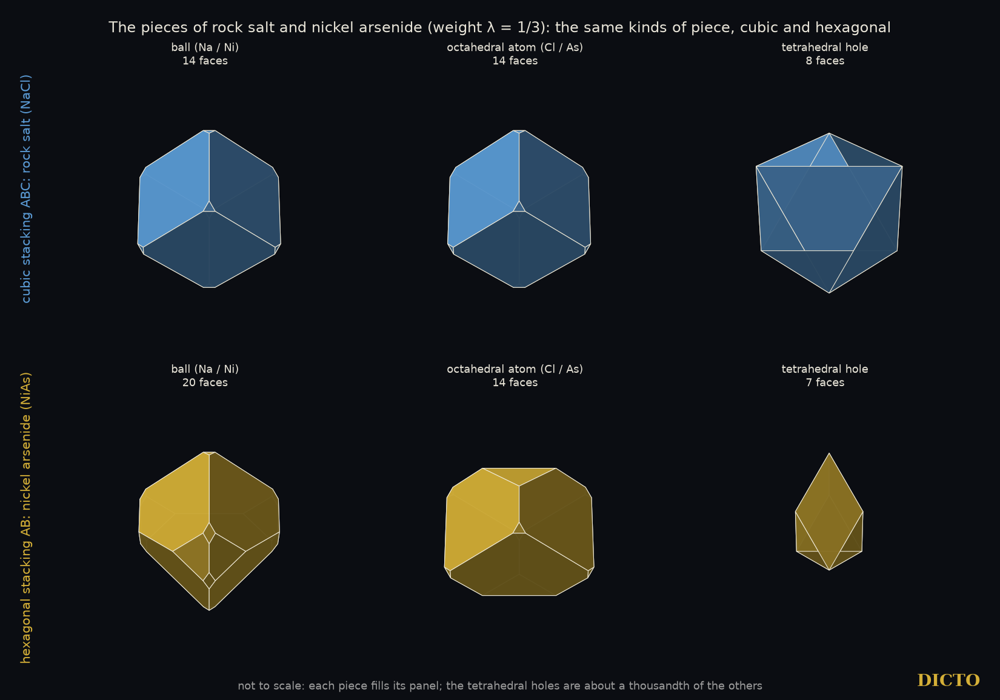
Figure 6.1. The pieces of rock salt (cubic stacking ABC, NaCl) and nickel arsenide (hexagonal stacking AB, NiAs) at weight λ = 1/3: the ball, the octahedral atom and a tetrahedral hole, each the power cell of its site. Their volumes agree with the exact volumes of the run to nine decimals. Not to scale: each piece fills its panel; the tetrahedral holes are in fact about a thousandth of the others. A mixed stacking is built from halves of these pieces, and by the Hexagonality Law each layer holds exactly the share of its own row.
3. Any stacking
Theorem 1. Let a role satisfy the Swap Rule. For any sequence of N consecutive layers of any stacking, periodic or not, the total volume T of that role's pieces in the N − 1 gaps between them satisfies |T − (ncF(c, c) + nhF(h, h))| ≤ 2·max|f| + 2·max|g|, where nc, nh count the cubic and hexagonal layers. Hence, in any stacking whose share of hexagonal layers tends to h, the average volume per layer tends to F(c, c) + h·(F(h, h) − F(c, c)), whatever the order of the layers and whatever the correlations between them.
Proof. With F(x, y) = f(x) + g(y), the gaps between layers 1, …, N give T = Σk<N f(tk) + Σk>1 g(tk) = Σk (f + g)(tk) − g(t1) − f(tN), and (f + g)(c) = F(c, c), (f + g)(h) = F(h, h). The two end terms are bounded; dividing by N gives the limit. ∎
So the total needs only h. The split of the pieces among the four kinds cc, ch, hc and hh does depend on how neighbouring layers are correlated, and the Markov descriptions of disordered stackings (Hart, Hansen and Kuhs, 2021) give it; the totals are independent of all of that.
Where h is measured. In crystals of nearly hard colloidal spheres the layers are often randomly stacked (random hexagonal close packing): each new layer takes either of the two positions not used by the layer below, with probability α for the cubic choice; α = ½ is completely random stacking, and then h = ½ (Pusey et al., 1989; later work discusses whether faulted-twinned cubic crystals are the stable form, Kegel and Dhont, 2000, and how such crystals age, Martelozzo et al., 2002). In ice frozen from supercooled water the layers are cubic and hexagonal in random order, stacking-disordered ice Isd (Malkin et al., 2012), whose cubicity 1 − h is measured by diffraction: 73.3% in the most cubic bulk sample (Malkin et al., 2015), 78% in 20 nm particles (Amaya et al., 2017). The framework of ice and of diamond is the stacking of #60's pyrochlore run (zinc blende with both atoms alike), where the law held in all 96 exact tests (#66).
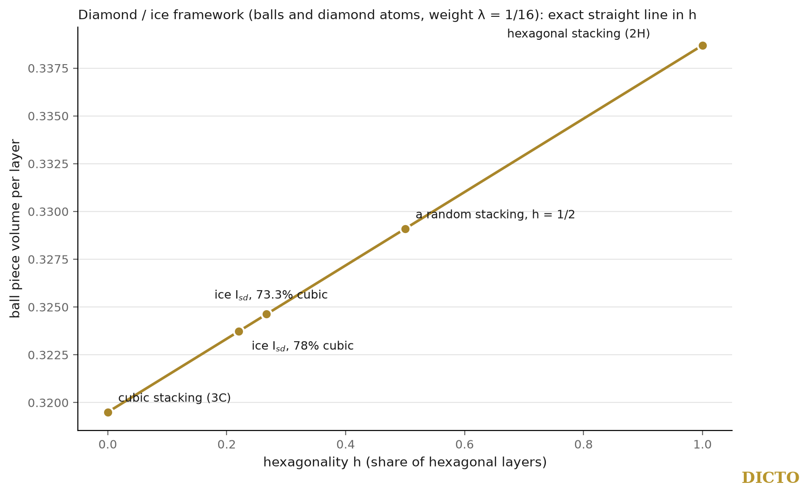
Figure 6.2. The diamond / ice framework (#60's pyrochlore run: balls and diamond atoms of weight λ = 1/16, holes 0): the volume of the ball pieces per layer is an exact straight line in the hexagonality h (Theorem 1). Marked: the two pure stackings, a completely random stacking (h = 1/2), and the measured cubicities of stacking-disordered ice (73.3%, Malkin et al. 2015; 78%, Amaya et al. 2017).
4. Stacking faults
Theorem 2. Let a role satisfy the Swap Rule. Compared with a perfect crystal of the same number of layers, a stacking fault that changes Δ layers from cubic to hexagonal (Δ < 0: from hexagonal to cubic) changes the total volume of that role's pieces by exactly Δ·(F(h, h) − F(c, c)).
Proof. Theorem 1 with the same N and the same end layers: T changes by (Δnh)F(h, h) + (Δnc)F(c, c) with Δnc = −Δnh. ∎
Counting the layers with Jagodzinski's rule on the classical sequences of each fault (perfect and faulted runs of 18 layers, read away from the ends):
Fault
Sequence
Layers changed
cubic crystal: twin boundary
…ABCABCBACBAC…
1 becomes hexagonal
cubic crystal: intrinsic fault (a layer removed)
…ABCABCBCABC…
2 become hexagonal
cubic crystal: extrinsic fault (a layer inserted)
…ABCABCBABC…
2 become hexagonal
hexagonal crystal: growth fault I1
…ABABCBCB…
1 becomes cubic
hexagonal crystal: deformation fault I2
…ABABCACA…
2 become cubic
hexagonal crystal: extrinsic fault E
…ABABCABAB…
3 become cubic
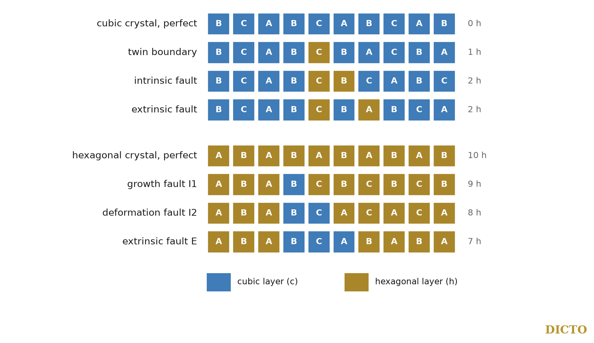
Figure 6.3. The six classical faults as strips of layers, each layer coloured by its type (blue cubic, gold hexagonal; Jagodzinski's rule), ten layers round the fault. A twin turns one layer of a cubic crystal hexagonal, an intrinsic or an extrinsic fault two; the faults of a hexagonal crystal turn one, two and three layers cubic.
So the faults of cubic crystals stand 1 : 2 : 2 and those of hexagonal crystals 1 : 2 : 3, in their effect on every kind of piece. In the physics of stacking faults the energies are ordered in the same way, in terms of the number of layers of the other kind that a fault creates, to lowest order (ANNNI descriptions of fault energies); here the ratios are exact, for the space each atom and hole occupies.
Rock salt. In rock salt and nickel arsenide (balls and octahedral atoms of weight λ, #64), at λ = 1/3 (in the window 7/24 < λ < 3/8), each layer that a fault turns hexagonal changes the pieces by exactly:
Piece
V(cc)
V(hh)
Change per hexagonal layer
ball
0.49961
0.52016
+71/3456
octahedral atom
0.49961
0.47888
−215/10368
tetrahedral hole (lower)
0.00039
0.00048
+1/10368
tetrahedral hole (upper)
0.00039
0.00048
+1/10368
The four changes add up to exactly zero (213/10368 − 215/10368 + 2/10368): a fault moves space from the octahedral atoms to the balls and the small tetrahedral holes, and creates or loses none.
5. The Laves foot atom on longer stackings
The proof of the law needs each piece to be fixed by its two neighbouring layers. In the Laves phases (#64) the foot atom, the big atom M0, reads three layer types above λ = 17/96, so the proof does not apply to it; #66 found the law exact for it on every stacking up to six layers and left it as an open problem. Faults and random stackings bring longer runs of layers, so we extended the test to the nine further close-packed stackings of seven and eight layers (ABACACB, ABABACB, ABCBACB, ABACBACB, ABCBABAB, ABCBCBAB, ABCBCACB, ABCACBAB, ABCABACB), each walked exactly in rational arithmetic with #57's census engine (all census checks passed), and tested every role in every window of λ against nc·T(ABC)/3 + nh·T(AB)/2.
Result. On all 13 non-pure close-packed stackings up to eight layers, in all five windows of λ, every role of the Laves phases, the foot atom M0 included, totals exactly ncF(c, c) + nhF(h, h): 390 of 390 exact tests.
So the law reaches beyond its proof: a piece that depends on three layers still adds up layer by layer on every stacking tested. Whether it does so on every stacking remains an open problem.
6. Conclusion
Wherever the Swap Rule holds, the space of a stacking is counted layer by layer: each layer brings exactly its own pure share. A random stacking is therefore fixed, in its totals, by one number, the share of hexagonal layers, which is what diffraction measures in randomly stacked colloids and in stacking-disordered ice; and every stacking fault moves space by a whole number of layer shares, 1, 2 and 2 for the faults of cubic crystals and 1, 2 and 3 for those of hexagonal crystals.
7. Prior art and credit
Random hexagonal close packing of colloids and its stacking probability α are due to Pusey and coworkers (1989); stacking-disordered ice and its cubicity to Malkin, Murray, Salzmann and coworkers (2012, 2015); Markov descriptions of stacking disorder are reviewed by Hart, Hansen and Kuhs (2021); correlations in randomly stacked solids are studied by Ganesh and Nasr (2023). The classical fault sequences are textbook material, and the ANNNI description of fault energies in terms of polytype energies is standard. We found no statement that the volumes of the weighted pieces of a stacking are fixed exactly by its hexagonality, or that faults change them by whole multiples of one layer share. The Hexagonality Law is #66; the rule of halves is #57 (with #61 for squashed stackings and #64 for crystals), and the Swap Rule is #61 (with #64 for crystals).
Chapter 7. The Hexagonality Law and the Fibonacci Stacking
From paper #69, DICTO DOI 10.5281/zenodo.23721038
The golden ratio in the volumes of a never-repeating crystal
Abstract. DICTO's long-standing aim is a bridge between repeating and never-repeating order. Close-packed layers can be stacked in a never-repeating Fibonacci order: layer types cubic (c) and hexagonal (h) following the substitution c → ch, h → c. We prove that in this stacking the share of hexagonal layers is exactly 1/φ² and that hexagonal layers never touch, so of the four kinds of piece between neighbouring layers only three occur, in the golden proportions 1/φ³ : 1/φ² : 1/φ² (cubic–cubic, cubic–hexagonal, hexagonal–cubic). By the Hexagonality Law (#66), every kind of piece then averages exactly V(cc) + (V(hh) − V(cc))/φ² per layer: the golden ratio enters the volumes of a crystal exactly. In rock salt at weight λ = 1/3 the ball piece averages 10999/20736 − (71/6912)√5 per layer. The Fibonacci order closes into periodic stackings of 15, 16, 26 and 63 layers with hexagonalities 2/5, 3/8, 5/13 and 8/21, ratios of Fibonacci numbers. On the first three, the Laves phases keep the law exactly in all 90 tests, including the foot atom for which the law is not proved. The stackings in which hexagonal layers never touch are exactly the configurations of the supersymmetric lattice fermions of Fendley, Schoutens and de Boer, whose ground states have the hexagonality of 6H.
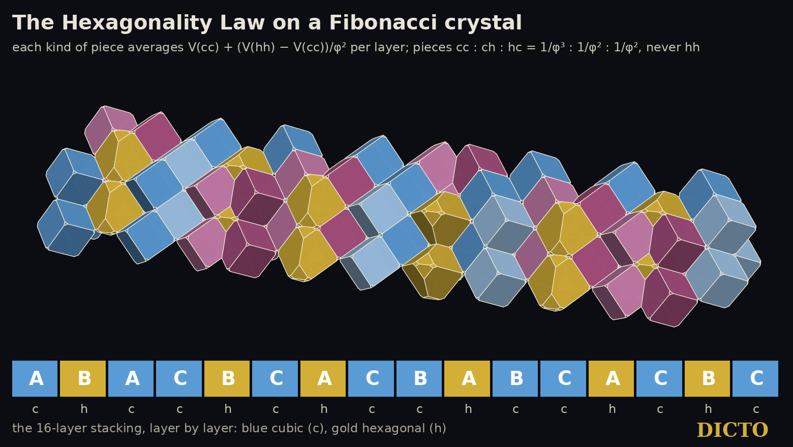
Figure 7.1. The Hexagonality Law on a Fibonacci crystal: rock salt on the 16-layer Fibonacci stacking ABACBCACBABCACBC at weight λ = 1/3, three neighbouring columns, the stacking running left to right. Each piece is the exact power cell of its site. Balls: cubic layers blue, hexagonal layers gold. Octahedral atoms between layers: cubic–cubic pale blue, cubic–hexagonal and hexagonal–cubic rose; hexagonal–hexagonal never occurs. Volumes agree with the exact run to nine decimals.
1. From repeating to never-repeating
A stacking of close-packed layers is a sequence of positions A, B, C, each layer in one of the two positions not taken by the layer below. The pure stackings repeat: ABC (cubic) and AB (hexagonal). The rule of halves (#57), the Swap Rule (#61, #64) and the Hexagonality Law (#66) hold on every stacking, and #67 drew from them that the totals of a random stacking are fixed by its share of hexagonal layers alone. DICTO's aim, to bridge the periodic and the aperiodic, asks for the most ordered of the never-repeating stackings: the Fibonacci one. In A Fibonacci Spine (#30) the Fibonacci chain appeared in a five-fold arrangement of the DICTO Ogdoecontahedron; here it is the order of the layers themselves.
2. The Fibonacci stacking
A layer is cubic (c) when its two neighbours sit in different positions and hexagonal (h) when they sit in the same (Jagodzinski). Any sequence of types is a stacking: with steps sk = ±1 between layers, layer k is c when sk−1 = sk and h when they differ, so the types fix the steps up to one sign. The Fibonacci stacking takes the types in the order of the Fibonacci word, the limit of the substitution c → ch, h → c started from c: chcchchcchcch… (Figure 7.2).
Figure 7.2. The first 34 layers of the Fibonacci stacking, coloured by type (blue cubic, gold hexagonal), with the position A, B, C of each layer. The hexagonal layers never touch.
Theorem. In the Fibonacci stacking (i) the share of hexagonal layers is h = 1/φ² = (3 − √5)/2; (ii) no two hexagonal layers are neighbours; (iii) among the pairs of neighbouring layers, cubic–cubic has frequency 1/φ³, cubic–hexagonal and hexagonal–cubic 1/φ² each, hexagonal–hexagonal 0. (iv) For every kind of piece to which the Hexagonality Law applies, the average volume per layer is exactly V(cc) + (V(hh) − V(cc))(3 − √5)/2.
Proof. (i) The substitution has matrix [[1, 1], [1, 0]] on the counts (c, h); its eigenvalue φ gives letter frequencies 1/φ for c and 1/φ² for h, the classical result for the Fibonacci word. (ii) Every h in a substituted word is the image of c → ch, the second letter of a block, and every block begins with c; so each h is followed by c, and hh never occurs. (iii) Each h is therefore preceded and followed by c, so ch and hc each have the frequency of h, 1/φ², and cc has 1 − 2/φ² = 1/φ³ (using φ² = φ + 1). (iv) By #66, over any long run of layers the total of such a piece is ncV(cc) + nhV(hh) up to two end terms (#67, Theorem 1); divide by the number of layers and use (i). ∎
So a Fibonacci crystal contains the pure cubic piece and the two mixed pieces only, in golden proportions, and never the pure hexagonal piece; and the pieces of each kind average to a number in ℚ(√5).
3. Rock salt in the Fibonacci order
In rock salt and nickel arsenide (balls and octahedral atoms of weight λ, tetrahedral holes empty, #64), at λ = 1/3 the exact averages per layer are:
Piece
Average per layer, exact
Decimal
ball
10999/20736 − (71/6912)√5
0.507461
octahedral atom
9715/20736 + (215/20736)√5
0.491693
each tetrahedral hole
11/20736 − (1/20736)√5
0.000423
They add up to the volume of one layer, as they must; the √5 parts cancel in the sum.
4. Repeating approximants, computed exactly
A periodic stacking must close: an even number of sign changes, and steps adding up to a multiple of 3. The Fibonacci words of Fibonacci lengths close after repeating them once, twice or three times: 5 types (chcch) three times gives the 15-layer stacking ABACBCACBABCBAC; 8 types twice the 16-layer ABACBCACBABCACBC; 13 types twice the 26-layer ABACBCACBABCACBCABACABCBAC; 21 types three times a 63-layer stacking. Their hexagonalities 2/5, 3/8, 5/13, 8/21 are ratios of Fibonacci numbers and tend to 1/φ².
For the pieces fixed by their two neighbouring layers the law is a theorem (#66), so these stackings follow it. The Laves foot atom M0 reads three layers above λ = 17/96, where the law is not proved, and #67 found it exact on every stacking up to eight layers. We walked the Laves phases exactly on the 15-, 16- and 26-layer Fibonacci approximants with #57's census engine (all census checks passed) and tested every role in every window of λ against nc·T(ABC)/3 + nh·T(AB)/2.
Result. On the 15-, 16- and 26-layer Fibonacci approximants, every role of the Laves phases, the foot atom M0 included, keeps the Hexagonality Law exactly: 90 of 90 tests. The 26-layer approximant (hexagonality 5/13 ≈ 0.385) is the closest to the golden 1/φ² computed so far.
5. Hard-core fermions
Read a hexagonal layer as a particle on a ring of sites, one site per layer. A stacking in which no two hexagonal layers touch, the Fibonacci stacking among them, is then a configuration of particles with hard cores: never two on neighbouring sites. These are exactly the configurations of the supersymmetric lattice fermions of Fendley, Schoutens and de Boer (2003), whose Hamiltonian is H = {Q+, Q−} with fermions that may not sit next to each other. On the periodic chain of N sites their ground states have int((N + 1)/3) fermions, a filling of 1/3, two of them when N is a multiple of 3. We counted, for every N from 2 to 15, the hard-core configurations by particle number: they agree with theirs (for N = 6: 1, 6, 9 and 2 with 0 to 3 particles, total 18), and so does their Witten index, 2(−1)p for N = 3p and (−1)p otherwise.
A crystal adds two conditions, because a periodic stacking must close: the step signs close only for an even number of hexagonal layers, so stackings lie in the sector of even particle number, and the layer positions close only when the steps add up to a multiple of 3. For N = 6 the closing configurations are the cubic stacking (no particle) and the three positions of 6H (two particles, h c c h c c); and 6H, the commonest polytype of silicon carbide, has hexagonality 1/3, the ground-state filling of the supersymmetric chain, in the same particle-number sector. The two pictures differ in their physics: the supersymmetric fermions hop and repel, while by the Hexagonality Law the volume each hexagonal layer carries does not depend on the others. We record the correspondence of configurations and counts only; the Fibonacci stacking's density 1/φ² ≈ 0.382 lies between the ground-state filling 1/3 and the hard-core limit 1/2.
6. Conclusion
The Fibonacci stacking is the never-repeating crystal of close-packed layers in its most ordered form. Its share of hexagonal layers is 1/φ², its hexagonal layers never touch, and its pieces come in the golden proportions 1/φ³ : 1/φ² : 1/φ². By the Hexagonality Law the golden ratio then enters every average piece volume exactly. One kit of pieces, borrowed from the two repeating stackings, builds the never-repeating one: the bridge between the two orders that DICTO set out to find, here at the level of the pieces themselves.
7. Prior art and credit
The Fibonacci chain is the most studied never-repeating one-dimensional order: Baake (1999) obtains it by cutting and projecting the square lattice along a line of slope 1/τ, and calls it the most common and best studied non-periodic 1D point set; its theory is set out in Baake and Grimm, Aperiodic Order (2013), and its Fibonacci numbers and words in the combinatorics of Lothaire (as cited by Kramer, 2011). Our sequence of layer types is this chain. Periodic structures converging to a quasicrystal are its approximants (Goldman and Kelton, 1993), which our 15-, 16-, 26- and 63-layer stackings are; a fault in a Fibonacci stacking is the local flip by which an approximant and its quasicrystal differ (Kléman, 2013). Hard-core lattice fermions with N = 2 supersymmetry are Fendley, Schoutens and de Boer (2003). Disordered stackings of layers are described by Markov chains (Hart, Hansen and Kuhs, 2021; Ganesh and Nasr, 2023). The Fibonacci word and its letter and pair frequencies are classical. Fibonacci chains have been used to describe faulted close-packed crystals: Farkas-Jahnke proposed approximating heavily faulted structures such as ZnS by Fibonacci chains of five-layer structure elements (IUCr congress abstract). Fibonacci multilayers (for example quasiperiodic Fe/Cr magnetic multilayers) are studied in physics. We found no statement that a Fibonacci order of the layer types gives the golden proportions of the stacking's pieces, or exact golden-ratio volumes. The Fibonacci chain in DICTO's own work is #30; the laws used are #57, #61, #64, #66 and #67.
Part II. Real materials
Chapter 8. Real Polytypes and the Hexagonality Law
From paper #68, DICTO DOI 10.5281/zenodo.23719275
Silicon carbide, silicon, germanium and cerium against the straight line
Abstract. The Hexagonality Law (#66) says that in ideal stackings every kind of piece totals a straight line in the share h of hexagonal layers. DICTO proposed to test it against real crystals. In the language physicists use for stackings, the axial Ising (ANNNI) model, we prove that a property is a straight line in h exactly when its couplings between layers two and three apart vanish, J2 = J3 = 0, and that its stacking faults then stand intrinsic : extrinsic : twin = 2 : 2 : 1, the ratios of #67. We then read published data. The computed volumes of the silicon carbide polytypes lie on the line within the precision of the published numbers; the measured ones scatter between laboratories by more than the whole effect. Silicon and germanium bend slightly but clearly, by about 0.04% of the volume: their volume couplings J2 are of the size of J1, a relaxation that ideal geometry does not have. Germanium's stacking-fault energies come close to the ideal 2 : 2 : 1 (2.25 : 2.06 : 1), silicon's do not (4.1 : 2.4 : 1). Silicon carbide's band gap is far from straight. In cerium, the double-hexagonal form at h = 1/2 has 1.2% more volume than the cubic form. The straight line is the ideal part of every stacking; the departures measure what real crystals add.
1. From the ideal to the real
The Hexagonality Law was proved for the pieces of ideal stackings, where space is shared by weight among atoms and holes at fixed positions (#66), and #67 drew its consequences for random stackings and faults. DICTO proposed the next step: to look at real crystals. Real crystals relax: their layers move apart or together a little, and their atoms shift. What matters is how close real stackings come to the straight line, and what the departures mean. We use only published numbers, and say for each how precise it is.
2. The straight line in the physicists' language
A stacking is a sequence of steps σi = ±1 from layer to layer (Hägg); a layer is cubic when the steps on either side agree and hexagonal when they differ, so the hexagonality is h = (1 − ⟨σiσi+1⟩)/2. In the axial next-nearest-neighbour Ising (ANNNI) model of Heine and coworkers a property X of a stacking, per atom pair and relative to the cubic stacking 3C, is written with couplings J1, J2, J3 between layers one, two and three apart. With the convention of Keller et al. (2023), checked against their energies: X(2H) = 2(J1 + J3), X(4H) = J1 + 2J2 + J3, X(6H) = (2/3)(J1 + 2J2 + 3J3).
Proposition. (i) A property X of the polytypes 3C, 6H, 4H and 2H is a straight line in h, X = s·h, exactly when J2 = J3 = 0 (and then J1 = s/2). (ii) For such a property the stacking faults of a cubic crystal stand X(ISF) : X(ESF) : X(TSF) = 2 : 2 : 1, where, in the same model, X(ISF) = 4(J1 + J2 + J3), X(ESF) = 4(J1 + 2J2 + 2J3) and X(TSF) = 2(J1 + 2J2 + 3J3).
Proof. (i) The three equations have the matrix with rows (2, 0, 2), (1, 2, 1), (2/3, 4/3, 2), of determinant 16/3 ≠ 0, so the couplings are fixed by the three values. X = s·h gives X(2H) = s, X(4H) = s/2, X(6H) = s/3, which J1 = s/2, J2 = J3 = 0 satisfies, and by uniqueness only it. Conversely J2 = J3 = 0 gives 2J1, J1, (2/3)J1, which is s·h with s = 2J1. (ii) With J2 = J3 = 0 the three fault values are 4J1, 4J1 and 2J1. ∎
So the ideal pieces of #66, which obey the law, have only a nearest coupling, and #67's fault ratios (a twin turns one layer hexagonal, an intrinsic and an extrinsic fault two each) are this 2 : 2 : 1. In a real crystal, J2 and J3 measure how far a property bends away from the line.
3. Volumes
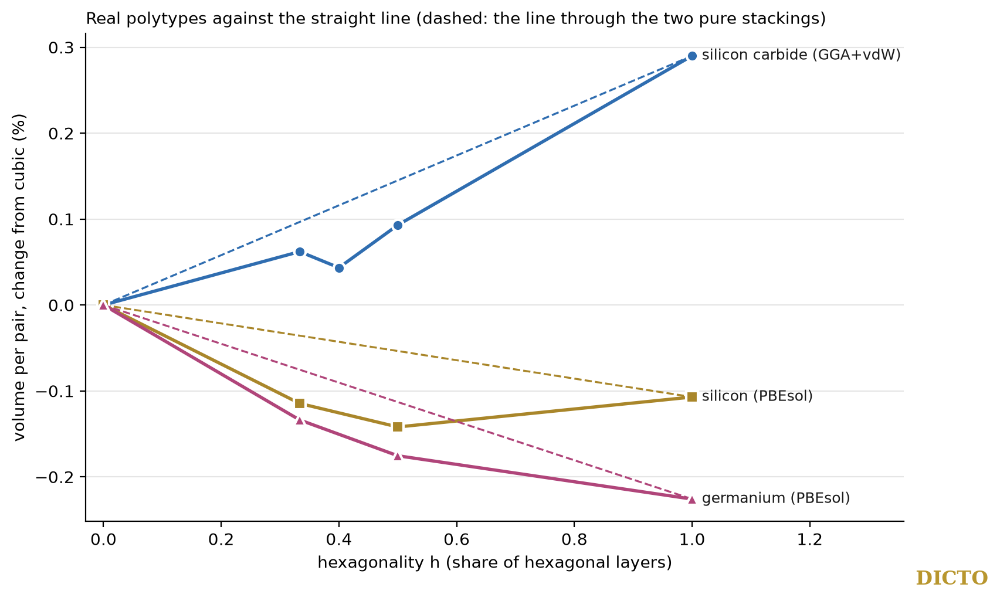
Figure 8.1. Volume per atom pair of real polytypes, as the change from the cubic stacking, against the hexagonality; dashed, the straight line through the two pure stackings. Silicon carbide (density-functional calculation with van der Waals correction, Kawanishi and Mizoguchi): within the precision of the published numbers (about 0.05%). Silicon and germanium (PBEsol, Keller et al.): a clear bend of up to about 0.04%.
Silicon carbide (2H, 4H, 15R, 6H, 3C). Kawanishi and Mizoguchi (2015) list measured lattice constants from six sources and three calculated sets. The volume per Si–C pair is V = (√3/2)a²(c/p). In every calculated set it lies on a straight line in h to within the rounding of the published numbers (largest departure 0.008–0.011 ų against a rounding of about 0.011 ų, on about 20.6 ų). The measured values differ between laboratories by up to 0.13 ų, more than the whole change from cubic to hexagonal (under 0.3%), so they neither confirm nor refute the line.
Silicon and germanium (2H, 4H, 6H, 3C), the diamond framework of #60's pyrochlore run and of ice. Keller et al. (2023) give volumes per pair to three decimals. They do not lie on a straight line: silicon departs by up to 0.019 ų (on 40.1 ų), about forty times the rounding, with its smallest volume at 4H, as the authors note; germanium by up to 0.016 ų. Solving for the volume couplings:
Data set
J1 (ų/pair)
J2
J3
J2/J1, volume
J2/J1, energy
Si, PBEsol
−0.0155
−0.0178
−0.0060
+1.14
−0.23
Si, their ref. [46]
−0.0297
−0.0132
+0.0012
+0.45
−0.25
Ge, PBEsol
−0.0457
−0.0143
−0.0058
+0.31
−0.06
The volume couplings beyond the nearest are of the size of the nearest one, relatively larger than the energy couplings and of the opposite sign; the two silicon sets disagree on their size, so the robust statement is their order of magnitude: real relaxation adds layer couplings of about 0.01–0.02 ų per pair, which the ideal geometry of the law does not have.
4. Stacking-fault energies
Keller et al. give the fault energies (mJ/m²) from their energy couplings. Against the ideal 2 : 2 : 1 of the Proposition:
Data set
intrinsic : extrinsic : twin
Ge, PBEsol (69.4, 63.3, 30.8)
2.25 : 2.06 : 1
Ge, their ref. [46]
2.32 : 2.07 : 1
Si, PBEsol (36.5, 21.2, 8.9)
4.10 : 2.38 : 1
Si, their ref. [46]
4.68 : 2.45 : 1
Germanium, whose energy coupling J2 is small, is close to the ideal; silicon, with a larger J2, is far from it. Measured fault energies of silicon (intrinsic about 55–69 mJ/m², extrinsic about 60, cited there) are higher than the calculated ones; the authors note that they are hard to measure.
5. Band gaps
The band gap of the silicon carbide polytypes rises with the hexagonality (Choyke, Hamilton and Patrick, 1964): about 2.36 eV (3C), 3.02 (6H), 3.23 (4H) and 3.33 (2H). The straight line through these misses them by up to 0.2 eV, and the gap couplings are J1 = 0.43, J2 = 0.19, J3 = 0.06 eV (J2/J1 = 0.45): the classical "linear" law is a rough trend, as later work found (Matsushita and Oshiyama, 2014). The band gap is an electronic property, not a share of space, and we compare it here only for its form.
6. A metal: cerium
At room temperature cerium exists both as cubic γ-cerium (fcc, a = 5.1612 Å, h = 0) and as double-hexagonal β-cerium (dhcp, ABAC, a = 3.6811 Å, c = 11.857 Å, h = 1/2). Their volumes per atom are 34.37 and 34.79 ų: the double-hexagonal form is 1.2% larger. With two stackings a line cannot be tested, but the size of the change from cubic to half hexagonal is thirty times that of silicon carbide or silicon.
7. Conclusion
In the language of stacking physics the Hexagonality Law is the statement that a property has only a nearest coupling between layers, and its fault ratios are then exactly 2 : 2 : 1. Real crystals follow the straight line to within their data in silicon carbide and to about 0.04% in silicon and germanium, whose small bend is a relaxation coupling of the size of the nearest one; germanium's fault energies are close to 2 : 2 : 1, silicon's are not; band gaps bend much more. The law's straight line is the ideal part of every stacking, and the departures of real crystals from it are what they add.
8. Prior art and credit
The ANNNI description of polytypes is Heine's (Cheng, Needs and Heine, 1988); the fault-energy formulas and all numbers used are those of the sources below. That a property is linear in the hexagonality exactly when its couplings beyond the nearest vanish is a direct consequence of the model, which we state with its proof for completeness; we did not find it stated in this form, nor its link to the volumes of the weighted pieces of #66. The Hexagonality Law is #66; random stackings and faults are #67.
Chapter 9. The Hexagonality Law in Real Materials II
From paper #70, DICTO DOI 10.5281/zenodo.23723565
Entropy and pressure
Abstract. The Hexagonality Law (#66) says that in ideal stackings every kind of piece is a straight line in the share h of hexagonal layers; in the physicists' layer model this is a property with only a nearest term (#68). DICTO proposed to test the law's form on two quantities that decide which stacking a crystal takes: its entropy and its enthalpy under pressure. Entropy: Mau and Huse wrote the stacking entropy of hard spheres in the same layer model; at close packing their nearest term is 55 and the next 6 (in 10⁻⁵ kB per sphere), so the entropy is about 90% of the law's form, and the farther terms grow toward melting (37, 18 and 9). Pressure: we prove that if a crystal's volume follows the law's form, pressure shifts only the balance between cubic and hexagonal layers and never reorders the longer stackings among themselves, and that it keeps the fault ratios 2 : 2 : 1. From published volumes and energies, at first order, pressure strengthens cubic 3C silicon carbide against 6H, 4H and 2H, as experiments find (6H turns into 3C above about 4.5 GPa); in silicon and germanium, whose volumes bend away from the straight line, pressure tilts them toward hexagonal-type stackings, mainly through the farther term.
1. Two quantities that choose the stacking
Which stacking a crystal takes is decided by its free energy: energy, entropy, and, under pressure, the term pressure × volume. Paper #68 compared real volumes with the law's straight line. DICTO proposed to go further and test the law's form on the two other quantities: the entropy of hard spheres, where energy plays no part at all, and the enthalpy under pressure, where the volume enters directly.
2. The layer model
As in #68: in the axial Ising (ANNNI) model a property X of a stacking, per atom pair and relative to 3C, is X(2H) = 2(J1 + J3), X(4H) = J1 + 2J2 + J3, X(6H) = (2/3)(J1 + 2J2 + 3J3) (convention of Keller et al., 2023), and X is a straight line in h exactly when J2 = J3 = 0 (#68, Proposition). Mau and Huse (1999) use the same idea with the layer types as spins: a field h for each layer, a coupling J between neighbouring layers, and h′, J′ for longer ranges. A straight line in the hexagonality is the case of the field alone.
3. Entropy of hard spheres
Hard spheres have no energy; their stackings differ only in entropy, by about 10⁻³ kB per sphere, with cubic stacking the highest (fcc − hcp = 0.00115 kB per sphere at close packing, Mau and Huse; 0.001164(8), Elser 2014). Mau and Huse measured the layer couplings of this entropy:
Density
field h
coupling J
h′
J/h
close packing
55
6
—
0.11
near melting (about 74% of close packing)
37
18
9
0.49
(in 10⁻⁵ kB per sphere; all terms favour cubic stacking). So at close packing the stacking entropy is about 90% of the law's form, a straight line in the hexagonality, and the farther terms grow as the spheres rattle more freely toward melting. Elser points out why the entropy differs at all: if every sphere moved in a fixed cage of its neighbours, the difference between cubic and hexagonal stacking would be exactly zero; it comes from collective motion. The law describes the fixed geometry; the entropy departs from its form only as far as the spheres move together. Entropy is not volume, and we compare the form only, not the numbers.
4. Pressure
At pressure P a stacking's enthalpy per pair is E + PV, so in the layer model the volume couplings JkV add P·JkV to the energy couplings.
Proposition. If a crystal's volume per pair follows the law's form (a straight line in the hexagonality, J2V = J3V = 0), then at first order pressure changes only J1: it shifts the balance between cubic and hexagonal layers, adds the same amount per hexagonal layer to every stacking, keeps the fault ratios intrinsic : extrinsic : twin of its own contribution at 2 : 2 : 1, and leaves J2 and J3, which order the longer stackings among themselves, unchanged.
Proof. The volume term is P·V, and V has couplings (J1V, 0, 0) by assumption; so P·V adds P·J1V to J1 and nothing to J2, J3. A property with nearest term only is s·h with s = 2J1 (#68), the same amount per hexagonal layer, and its fault values are 4J1, 4J1, 2J1 (#68). ∎
Real crystals are not exactly of this form, so we computed, at first order (couplings and volumes at zero pressure), the margin by which cubic 3C beats 6H, 4H and 2H, from the same published data as #68 (silicon carbide with van der Waals correction: energies 15, 2.7 and 1.3 meV per pair above 3C for 2H, 4H and 6H, Kawanishi and Mizoguchi; silicon and germanium, Keller et al.).
Figure 9.1. The margin of cubic 3C over 6H, energy plus pressure × volume per atom pair, against pressure, at first order. Silicon carbide gains margin; silicon and germanium lose it; their lines are dashed beyond their own transitions to β-tin (near 11 and 10 GPa). The dotted line marks the pressure above which 6H silicon carbide is observed to turn into 3C.
Material
nearest share of the volume couplings
3C over 6H
3C over 4H
3C over 2H
silicon carbide
0.78
+0.13
+0.11
+0.17
silicon
0.39
−0.43
−0.36
−0.13
germanium
0.70
−0.57
−0.50
−0.32
(change of the margin in meV per atom pair per GPa; nearest share = |J1V| / (|J1V| + |J2V| + |J3V|).) Silicon carbide's volume is close to the law's form and rises slightly with the hexagonality, so pressure strengthens the cubic stacking. That agrees with experiment: 3C becomes more stable with pressure, and 6H turns into 3C above about 4.5 GPa at high temperature (Sugiyama and Togaya, 2001; review, 2018). In silicon and germanium the volume falls with the hexagonality and bends away from the straight line, and pressure tilts them toward hexagonal-type stackings; at first order silicon's margin over 6H would close near 8 GPa, but silicon turns into β-tin near 11 GPa and the first-order estimate ignores how compression changes the couplings, so this is a tilt, not a predicted phase. For germanium the margins close only at 24–50 GPa, far beyond its own transition.
5. Conclusion
The law's straight line describes the ideal part of what chooses a stacking. Near close packing the entropy of hard spheres is about 90% of that form. Under pressure, a volume of that form could only tilt the balance between cubic and hexagonal; silicon carbide, close to it, is pushed toward cubic as experiments see; silicon and germanium, further from it, are tilted the other way, through the farther couplings their relaxation adds.
6. Prior art and credit
The layer (ANNNI) description of polytypes is Heine's; the entropy couplings of hard spheres are Mau and Huse's (1999), with Bolhuis, Frenkel and others before them; the net entropy difference and its phonon origin are Elser's (2014); the energies and volumes are those of Kawanishi and Mizoguchi (2015) and Keller et al. (2023); the high-pressure behaviour of silicon carbide is from Sugiyama and Togaya (2001) and a 2018 review. The statement that a volume of the law's form shifts only J1 under pressure is an immediate consequence of the model, which we state with its proof. The Hexagonality Law is #66; real polytypes are #68.
Chapter 10. The Hexagonality Law in Real Materials III
From paper #71, DICTO DOI 10.5281/zenodo.23726064
Alloys and hydrogen
Abstract. Hydrogen is the enemy of titanium implants and of the zirconium tubes that hold nuclear fuel: it gathers in the metal and turns it brittle. We show that the places hydrogen can sit follow the Hexagonality Law (#66) exactly. In a close-packed metal of any stacking, per metal atom, the pairs of tetrahedral holes that share a face, and the pairs of octahedral holes that share a face, both number h, the share of hexagonal layers. Two hydrogen atoms cannot sit in one face-sharing tetrahedral pair, so at most 2 − h tetrahedral sites per atom can be filled, and a hydride MHx with hydrogen in tetrahedral sites needs the metal locally to have h ≤ 2 − x: the brittle dihydrides need fully cubic stacking. DICTO proposed to test the law on alloys, starting from Ti-6Al-4V and Ti-Nb-Zr. Across six alloy families the law sorts them on one scale: exact for the hole and hydrogen counts; the composition of the magnesium LPSO alloys is a straight line in h in the authors' own model; the energies of cobalt and iron stackings come close (second-neighbour share 0.15–0.17); the faults of the high-entropy alloy CrCoNi depart clearly. In the standard fault model of these steels and alloys, Olson and Cohen's interface energy σ is exactly twice the second-neighbour layer coupling, so it measures the distance from the law.
1. Why alloys
Papers #67–#70 tested the Hexagonality Law on stackings of single elements and simple compounds. Engineering metals are alloys, and their most important stacking events are faults: the turning of a few layers from hexagonal to cubic or back. DICTO proposed to test the law there, starting from the titanium alloys Ti-6Al-4V (aircraft, implants, printed parts) and Ti-Nb-Zr (low-stiffness implants), and to include their spherical powders. We added four families in which cubic against hexagonal stacking is the main story: the long-period stacking (LPSO) magnesium alloys, Fe–Mn and high-entropy alloys, cobalt alloys, and the zirconium alloys of nuclear fuel cladding. A powder bed or a printed part is made of grains; inside each close-packed grain the results below apply unchanged.
2. Hydrogen sites
Take balls of diameter a in close-packed layers A, B, C, any stacking, and let h be the share of hexagonal layers (a layer is hexagonal when the layers above and below it sit in the same position). Every stacking has 2 tetrahedral and 1 octahedral hole per ball (#66).
Theorem. Per ball, in any close-packed stacking: (i) the pairs of tetrahedral holes sharing a face number h; (ii) the pairs of octahedral holes sharing a face number h. Consequently (iii) if two hydrogen atoms cannot occupy one face-sharing tetrahedral pair, at most 2 − h tetrahedral sites per ball can be filled, and (iv) a hydride MHx with its hydrogen in tetrahedral sites needs local hexagonality h ≤ 2 − x.
Proof. (i) A tetrahedral hole has its base on a triangle of one layer and its apex on a ball of the next. Two tetrahedra can share a face only across a layer i, on the same triangle, one with its apex in layer i − 1 and one in layer i + 1. For each ball of layer i there is exactly one triangle of i that lies under a ball of i + 1, and its partner below exists exactly when layer i − 1 sits where i + 1 sits, that is when layer i is hexagonal. So each hexagonal layer gives one pair per ball and each cubic layer none: h pairs per ball. (ii) The octahedral holes between two layers sit over the third position, the one neither layer uses. The holes between i − 1 and i and between i and i + 1 share a face of layer i exactly when they sit over the same position, that is when i − 1 and i + 1 coincide: again one pair per ball of each hexagonal layer. (iii) Each pair loses one of its two sites, and the pairs are disjoint (each tetrahedron has one base layer), so 2 − h remain. (iv) follows. ∎
We checked (i) and (ii) on explicit coordinates for six stackings (3C, 2H, 4H, 6H and the 10H and 14H of §3), periodic in all three directions; all counts are exact. The same run finds the tetrahedral pairs that share only an edge (centres 0.707a apart) at 6 − 3h per ball, also a straight line (computed, not proved here).
A face-sharing tetrahedral pair has its centres 0.408a apart: 1.20 Å in α-titanium (a = 2.95 Å), 1.32 Å in α-zirconium (a = 3.23 Å), far inside the 2.1 Å that hydrogen atoms in metals keep apart (Switendick's criterion), so (iii) applies to both. The edge-sharing pairs are 2.28 Å apart in zirconium (allowed) and 2.09 Å in titanium (at the limit; no claim made). Real titanium and zirconium are slightly flattened (c/a ≈ 1.59 against the ideal 1.633): the counts are exact, the distances shift by about 3%.
Figure 10.1. (a) Hydrogen sites per metal atom against the hexagonality, from explicit coordinates: usable tetrahedral sites 2 − h, face-sharing pairs h, octahedral sites 1, exact on every stacking tested. (b) Energies of six iron stackings (non-magnetic, Tsumuraya et al.) against the law's straight line through 3C and 2H: close, with 4H above the line.
3. Magnesium LPSO alloys
The Mg–Zn–Y alloys owe their strength to long-period stacking ordered phases: hexagonal magnesium with a fault every k layers, each fault making two cubic layers that collect the zinc and yttrium (Abe, Ono, Itoi, Yamasaki and Kawamura, from atom-resolved microscopy). Built from their description and checked with Jagodzinski's rule:
Phase
fault every
stacking (one period)
h
10H
5 layers
ABCBCBACAC
3/5
18R
6 layers
ABCBCBCABABABCACAC
2/3
14H
7 layers
ABCBCBCBACACAC
5/7
24R
8 layers
ABCBCBCBCABABABABCACACAC
3/4
Abe and co-workers estimate the compositions by giving each cubic layer the same composition Mg85Zn5Y10 and each hexagonal layer pure magnesium, and their microscopy shows the same cubic-layer intensity in every phase. That model is the law's form: the zinc-plus-yttrium content is 15% × (1 − h), giving their 6.0, 5.0, 4.3 and 3.7%. By the Theorem, the hydrogen-site counts of these phases are straight lines in the same h.
4. Faults and the second neighbour
In the layer (ANNNI) model used in #68, a property relative to cubic stacking is X(2H) = 2(J1 + J3) per layer, and the fcc faults cost ISF = 4(J1 + J2 + J3), ESF = 4(J1 + 2J2 + 2J3), twin 2(J1 + 2J2 + 3J3) (Denteneer and van Haeringen). The law holds exactly when J2 = J3 = 0 (#68). Steels and alloys that deform by turning cubic layers hexagonal (TRIP) or by twinning (TWIP) are described by Olson and Cohen's formula, ISF = 2ρΔG + 2σ, where ρΔG is the cost per area of one hexagonal layer and σ an interface energy.
Proposition. In the layer model, ρΔG = 2(J1 + J3) and 2σ = 4J2. So σ = 0 exactly when the second-neighbour coupling vanishes, and σ measures how far a material's faults are from the law.
Proof. ρΔG is X(2H) per layer, 2(J1 + J3); subtract twice that from ISF = 4(J1 + J2 + J3). ∎ (An immediate consequence of the standard expressions; not claimed as new.)
Material (data)
what was tested
result
|J2/J1|
hcp cobalt (Aas et al., four computed faults)
energy per cubic layer made: I1 16, T2 39, I2 48, E 62 meV for 1, 2, 2, 3 layers
16.0, 19.5, 24.0, 20.7 meV: within ±20% of one constant
0.15
iron, six stackings (Tsumuraya et al., non-magnetic)
energy and volume against h
volume linear within 0.1 Bohr³ of 69 (rounding); energy close, 4H 12 meV/atom above the line
Cobalt and iron are close to the law: about four fifths of a fault's cost is the per-cubic-layer term. The 10H of iron in that set is the same stacking as the magnesium 10H of §3. In CrCoNi the local chemical order reaches across layers and the law's prediction ESF = ISF misses by 15 to 36 mJ/m².
5. Hydrides of zirconium and titanium
By the Theorem (iv):
Hydride
x
needs h ≤
γ-ZrH
1
1 (the count allows hexagonal)
δ-ZrH1.5
1.5
0.50
δ-ZrH1.66
1.66
0.34
ε-ZrH2, δ-TiH2
2
0 (fully cubic)
The hydrogen-rich hydrides that embrittle zirconium cladding and titanium therefore need the metal locally at least two-thirds cubic. This agrees with the accepted mechanism, in which the metal turns from hexagonal to cubic by partial dislocations gliding on alternate basal planes (Carpenter), each leaving a fault that makes cubic layers (#67). The bound is a necessary condition only: γ-ZrH is itself cubic-stacked though the count would allow hexagonal.
6. Where the law stops
Body-centred cubic metals are not close-packed stackings, and the law does not apply to them: the β phase of Ti-Nb-Zr, ferritic steels such as chromium–molybdenum steel, and the ω phase of titanium alloys. The α″ martensite of Ti-Nb-Zr is a distorted hexagonal stacking: the counts of §2 apply to it, the distances shift. The cobalt–chromium–molybdenum alloys of implants are close-packed and belong with cobalt in §4.
7. Conclusion
The law sorts alloys on one scale. Exact: the hole and hydrogen counts of every stacking, hence the bound h ≤ 2 − x for hydrides. Exact in the authors' own model: the composition of the magnesium LPSO phases. Close: the stacking energies of cobalt and iron. Broken: the faults of the high-entropy alloy CrCoNi, where Olson and Cohen's σ, twice the second-neighbour coupling, is large.
8. Prior art and credit
The LPSO stackings and the composition model are Abe, Ono, Itoi, Yamasaki and Kawamura's; the iron polytype energies and volumes are Tsumuraya, Watanabe and Sawaguchi's; the cobalt fault energies are Aas, Szunyogh, Evans and Chantrell's; the CrCoNi fault energies are Ding, Yu, Asta and Ritchie's; the fault model is Olson and Cohen's; the layer-model fault expressions are Denteneer and van Haeringen's; the hydride mechanism is Carpenter's; the hydrogen distance criterion is Switendick's. That face-sharing tetrahedral pairs occur around hexagonal layers is standard crystallography; the count h per ball for any stacking, the resulting bound for hydrides, and the reading of σ as 2J2 are stated here with proofs, and the proofs are short. DICTO proposed the test on alloys and the titanium cases; the further families and the computations are joint work.
Chapter 11. The Hexagonality Law in Real Materials IV
From paper #72, DICTO DOI 10.5281/zenodo.23728287
Oxides: hexagonal perovskites and battery cathodes
Abstract. Chemists judge oxide structures with two rules of thumb: Pauling's third rule (octahedra that share faces are unstable) and Goldschmidt's tolerance factor (a large A cation pushes a perovskite towards hexagonal stacking). DICTO proposed that three-dimensional stacking rules can replace such rules of thumb. We show that both rules are measured by one number, the hexagonality h of the oxygen stacking (#66). In a hexagonal perovskite ABO3 of any stacking, each B octahedron shares faces with 2h neighbours and corners with 6(1 − h). In a layered battery cathode LiMO2, the lithium–metal octahedra that share a face number 2h per lithium site on average. Measured data follow the law: the volumes of four BaRuO3 polytypes lie on one straight line in h (within 0.2% for the three precisely measured ones), and pressure walks the structure down h, 9R → 4H → 6H → 3C. In LixCoO2 on charge, the H1-3 phase puts all its face-sharing into the empty gaps and keeps lithium only where it shares no face, giving the bound x ≤ 1 − h for the stable phases; its layer spacing, 4.52 Å, lies on the law line between O3 and O1 (4.525 Å). The law has limits: in BaMnO3 the volume follows it but the energy does not.
1. Why oxides
Papers #67–#71 tested the Hexagonality Law on elements, simple compounds and alloys: there the atoms themselves are the close-packed balls. In most oxides the oxygen ions are the close-packed layers and the metal ions sit in the holes between them, mostly in octahedra. Whether two neighbouring octahedra share a corner, an edge or a face then depends only on the stacking of the oxygen layers, and Pauling's third rule says the face-sharing ones cost energy, because their metal ions come close. DICTO proposed that three-dimensional stacking rules (the Hexagonality Law, the Rule of Halves, the Swap Rule) can stand in for rules of thumb used in chemical modelling. Here we test the first of them on two families where the stacking is the main story: the hexagonal perovskites, and the layered oxides that hold the lithium in rechargeable batteries.
2. The count
Let h be the share of hexagonal layers in the stacking of the close-packed oxygen (or AO3) layers: a layer is hexagonal when the layers above and below it sit in the same position, A, B or C. An octahedral hole between two layers sits on the third position, the one neither layer uses.
Theorem. (i) In a perovskite ABO3 built of close-packed AO3 layers with B in the octahedra formed by oxygen alone, each B octahedron shares a face with 2h neighbours and a corner with 6(1 − h) neighbours, for any stacking. (ii) In a layered oxide LiMO2 (oxygen layers in pairs around the M layers, lithium in the gaps), the face-sharing lithium–metal pairs number 2h per lithium site; a gap bounded by two cubic layers (O3 type) has none, a gap bounded by two hexagonal layers (O1 type) has two, a mixed gap (O2 type) has one.
Proof. Take one oxygen layer and the octahedra just above and just below it. Each sits on the position missing from its own two layers. If the layer is hexagonal, the layers above and below it are on the same position, so the two octahedra are on the same position too and share the three oxygen atoms of the layer between them: a face. If the layer is cubic, the two octahedra are on different positions and meet in an edge (layered oxides) or, in the perovskite, where only one hole in four is filled, in single corners with three neighbours. Each B octahedron of a perovskite has one layer above and one below; each lithium gap has one bounding layer on each side. Averaging over the stacking gives 2h and 6(1 − h). ∎ The counts were checked from explicit coordinates for 3C, 2H, 4H, 6H and 9R perovskites and for the O3, O1, O2 and H1-3 layered stackings (study files perovskite_counts.py, cathodes.py).
3. Hexagonal perovskites
BaRuO3 is made in four polytypes; the stacking can be read from the interfaces between neighbouring octahedra (C corner, F face) listed by Jin et al.: 9R (CFF repeated, h = 2/3), 4H (CF, h = 1/2), 6H (FCC, h = 1/3) and 3C (all C, h = 0). The face-sharing share equals h in every case, as Theorem (i) requires. Their volumes per formula unit lie on one straight line:
polytype
h
volume measured (Å3)
law line 64.25 + 6.82h
off
3C
0
64.28
64.25
+0.06%
6H
1/3
65.88 (c known to two figures)
66.52
−0.97%
4H
1/2
67.51
67.66
−0.22%
9R
2/3
68.91
68.79
+0.16%
Since the volume rises with h, pressure favours lower h at first order (#70, Proposition). Jin et al. made the polytypes at increasing pressure: 9R at ambient, 4H at 3 GPa, 6H at 5 GPa, 3C at 18 GPa. The sequence walks down h step by step: 2/3, 1/2, 1/3, 0. The same direction is seen with chemistry: in Ba1−xSrxRuO3, the smaller strontium takes the structure 9R → 4H → 3C. The tolerance factor says which way the structure leans; the law says by how much the volume and the face-sharing change at each step.
BaMnO3, computed by Chen and Millis (DFT, antiferromagnetic, per Mn), gives a second case. The volumes of 3C (61.9), 4H (66.1) and 2H (71.0 Å3) are close to the law: 4H lies 0.5% below the straight line through 3C and 2H. The energies are not: 2H is lowest, 4H is 109 meV higher and 3C 775 meV higher, so 4H lies 278 meV below the line. The barium ion is too large for cubic BaMnO3 (tolerance factor above 1), which makes 3C unusually costly; in the language of #68, the second-neighbour coupling is large here.
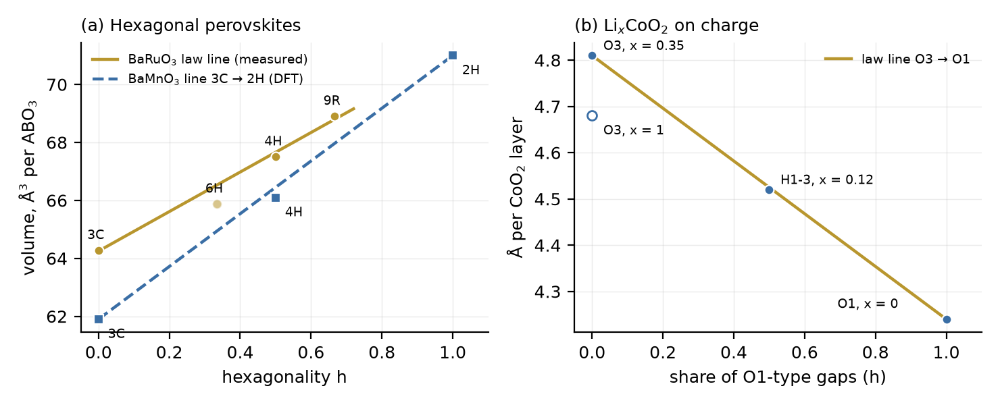
Figure 11.1. (a) Volume per ABO3 against the hexagonality h: BaRuO3 measured (Jin et al.; 6H pale, its c known to two figures) with the law line, and BaMnO3 computed (Chen and Millis) with the straight line from 3C to 2H. (b) Layer spacing of LixCoO2 (measured, Motohashi et al.) against the share of O1-type gaps: the H1-3 phase sits on the line from O3 to O1; open circle: O3 with full lithium.
4. Lithium cobalt oxide on charge
LiCoO2, the cathode of most phone batteries, has cubic O3 stacking (h = 0): every lithium octahedron shares only edges with the cobalt octahedra. On charge the lithium leaves. Motohashi et al. measured the full series: O3 down to x = 0.35, then the H1-3 phase at x = 0.12, then CoO2 with O1 stacking (h = 1) at x = 0. H1-3 has alternating O3-type and O1-type gaps (h = 1/2), and the lithium sits only in the O3-type gaps (Van der Ven et al. predicted this staging; Motohashi et al. confirm the structure). By Theorem (ii) the face-sharing count per gap runs 0, 2, 0, 2, …: H1-3 puts all its face-sharing into the gaps it leaves empty.
Proposition (lithium bound). If lithium occupies only gaps in which it shares no face with a metal octahedron, then x ≤ 1 − hgap, where hgap is the share of O1-type gaps. All stable phases in Motohashi et al.'s series obey it: O3 (hgap = 0, x ≤ 1), H1-3 (1/2, x = 0.12), O1 (1, x = 0).
This is the oxide counterpart of the hydride bound of #71 (h ≤ 2 − x): in both, the number of guest atoms is limited by the faces the stacking creates. One known structure breaks it: O2-LiCoO2, in which every gap is mixed and every lithium shares one face with cobalt. It is made only by ion exchange from a sodium cobalt oxide (Delmas, Braconnier and Hagenmuller) and is metastable (Carlier et al.). A face-sharing pair therefore costs energy rather than being forbidden, as Pauling's rule says; the law counts the pairs exactly.
The layer spacing tests the law as a number. Motohashi et al. give 4.81 Å per CoO2 layer for O3 at x = 0.35–0.50 and 4.24 Å for O1. The law line at h = 1/2 gives 4.525 Å; H1-3 measures 4.52 Å (c/6 = 4.522 Å), within 0.11%. Spacings in staged intercalation compounds are known to add layer by layer (as in graphite intercalation), so this agreement is expected once H1-3 is read as half O3 and half O1; what the law adds is the face count that tells which half holds the lithium.
5. Where the law stops
(1) The BaMnO3 energies are far from the straight line (Section 3), although the volumes are close. (2) The sizes of face-sharing clusters (dimers in 4H, trimers in 9R, endless chains in 2H) are not linear in h; they depend on runs of hexagonal layers and drive the magnetism Jin et al. report. (3) The layer spacing of LixCoO2 also depends on x at fixed stacking (4.68 Å at x = 1 against 4.81 Å at x = 0.35), so the law describes the stacking part only. (4) In nickel-rich cathodes the H2 → H3 change keeps O3 stacking (h = 0 throughout); its large shrinkage of the layer spacing is outside the law.
6. Conclusion
Pauling's third rule and the tolerance factor become one count: the faces shared by oxygen octahedra are 2h per octahedron in perovskites and 2h per lithium site in layered cathodes, for any stacking. Measured volumes of BaRuO3 lie on the law line, pressure walks them down h, and charged LiCoO2 keeps its lithium where the count gives zero, x ≤ 1 − h.
7. Prior art and credit
The stacking notation for hexagonal perovskites (h and c layers, nH and nR) goes back to Katz, Ward and co-workers (Donohue, Katz and Ward); the O/P notation for layered oxides is Delmas, Fouassier and Hagenmuller's; H1-3 as an O1/O3 hybrid with lithium in every other gap is Van der Ven et al.'s prediction and Motohashi et al.'s measurement; that face-sharing costs energy is Pauling's third rule. The counts 2h and 6(1 − h) for any stacking, the split of the face count between gaps, the lithium bound and the comparison with the law line are stated here with proofs; the proofs are short. DICTO proposed replacing chemical rules of thumb with three-dimensional stacking rules; the choice of perovskites and cathodes and the computations are joint work.
Chapter 12. The Hexagonality Law in Real Materials V
From paper #73, DICTO DOI 10.5281/zenodo.23728921
Ice, diamond and nanowires
Abstract. Ice, diamond and the semiconductor nanowires of new lasers and solar cells are all built from the same piece: a tetrahedron of bonds, in close-packed layers that stack cubic or hexagonal. We test the Hexagonality Law (#66) on them. The geometry is exact: in any stacking, the eclipsed bonds (whose neighbours face each other) number h/2 per atom, where h is the share of hexagonal layers. For six III-V semiconductors in four stackings each, computed by Belabbes et al., the conduction-band offset lies on the law's straight line within 4% of its full change and the crystal-field splitting within 7%. The polytype energies of the tetrahedral elements rank them by their distance from the law: tin 0.02, germanium 0.08, diamond 0.15, silicon 0.32, and silicon carbide 1.03; silicon carbide, the best-known material with many stacking forms, is the one furthest from the law. For ice, Tonauer et al. measured −37.7 J/mol for pure cubic ice turning hexagonal; the law predicts that the stacking-disordered ice of clouds releases 37.7 J/mol times its cubicity, and that its excess vapour pressure scales the same way. This closes the series on real materials.
1. One piece, three materials
In diamond each carbon atom bonds to four others at the corners of a tetrahedron. Silicon, germanium and grey tin do the same; in gallium arsenide, indium phosphide and their relatives the two kinds of atom alternate; in ice the oxygen atoms of water hold the same network through hydrogen bonds. In all of them the atoms form close-packed double layers, and the double layers stack cubic (zinc blende, diamond, ice Ic) or hexagonal (wurtzite, lonsdaleite, ice Ih), or any mixture. Grown as thin wires, GaAs and InP switch between the two, and the stacking can be set layer by layer during growth (Algra et al.; Caroff et al.); a few cubic layers in a hexagonal wire act as a quantum well (Spirkoska et al.). DICTO chose these three families as the last test of the law in real materials.
2. The count
Each double layer has its lower atoms on one of the positions A, B, C and its upper atoms straight above them, joined by a bond along the stacking axis. The upper atom bonds to three atoms of the next double layer, and the lower atom to three of the previous one. A layer is hexagonal when the layers on either side of it sit on the same position.
Theorem. In a tetrahedral network on any close-packed stacking, per atom: (i) the eclipsed bonds number h/2 (all other bonds are staggered); (ii) the eclipsed third-neighbour pairs number 3h/2, at 5/3 of the bond length (staggered third neighbours lie at 1.915 and 2.517 bond lengths).
Proof. Only the bond along the axis can be eclipsed; the three slanted bonds of every atom are staggered in all stackings. The axial bond of double layer k joins a lower atom whose other bonds point down to position Lk−1 and an upper atom whose other bonds point up to position Lk+1. The two sets of three bonds face each other (eclipsed) exactly when Lk−1 = Lk+1, that is when layer k is hexagonal, and then each of the three pairs of end atoms is a short third-neighbour pair. There is one axial bond per two atoms, so the eclipsed bonds are h/2 per atom and the short pairs 3h/2. ∎ Both counts were checked from explicit coordinates on 3C, 2H, 4H, 6H, 9R and 15R (tetra_counts.py).
The eclipsed bond is the only geometric difference between cubic and hexagonal stacking up to third neighbours, so any property that is a sum of local bond terms is a straight line in h. That is the Hexagonality Law for these materials. How far real properties stay on it is a question of data.
3. Nanowire semiconductors
Belabbes, Panse, Furthmüller and Bechstedt computed the band structures of GaP, GaAs, GaSb, InP, InAs and InSb in the stackings 3C, 6H, 4H and 2H (h = 0, 1/3, 1/2, 1) with one method throughout. We compare each quantity at 6H and 4H with the straight line from 3C to 2H, and give the distance as a share of the full change from 3C to 2H:
quantity
mean distance from the law line
worst case
conduction-band offset ΔEc
4%
InP 4H, −8%
crystal-field splitting Δcf
7%
InP and GaP, +13%
valence-band offset ΔEv
10%
InP 4H, −27%; GaSb 6H, +27%
band gap Eg (GaP left out: indirect in 3C)
11%
GaAs 6H, +23%
The conduction-band offset decides how electrons collect in a cubic segment of a hexagonal wire. On the law line, a wire with hexagonality h has its conduction band raised by h times the full wurtzite–zinc-blende offset (for GaAs 149 meV, for InP 183 meV), whatever the order of the layers, to within a few per cent. The crystal-field splitting, which comes from the hexagonal symmetry itself, follows the line almost as well.
Figure 12.1. (a) Conduction-band offsets (circles) and crystal-field splittings (squares) of six III-V semiconductors in four stackings (Belabbes et al.), each scaled by its 2H value, against the hexagonality h: the law is the diagonal. (b) Energies above 3C, scaled by the 2H value, for six stackings of tin, germanium, diamond, silicon and silicon carbide, from the ANNNI parameters of Ziembicki et al.: tin and germanium lie on the law, silicon carbide far from it.
4. Diamond and the tetrahedral elements
In the layer model used in #68, the energy of a stacking depends on couplings J1, J2, J3 between double layers one, two and three apart; the law holds exactly when J2 = J3 = 0. Ziembicki et al. fitted the couplings for the group-IV elements and their compounds with one method. The ratio (|J2| + |J3|)/J1 measures the distance from the law:
material
J1, J2, J3 (meV per double-layer pair)
distance from the law
tin (grey)
15.18, −0.22, −0.05
0.02
germanium
16.82, −1.05, −0.34
0.08
diamond
25.45, −3.44, −0.34
0.15
silicon
10.59, −2.59, −0.77
0.32
silicon carbide
2.74, −2.42, −0.40
1.03
Keller et al. computed the energies directly for silicon and germanium. Germanium's 6H and 4H lie within 6% of the law line (4.5 and 7.1 meV per atom against 5.3 and 8.0); silicon's lie 21–24% below it (1.2 and 2.5 against 3.2 and 4.9). Diamond sits at the same distance as cobalt and iron in #71. Silicon carbide, the best-known polytypic material, is the one furthest from the law, where J2 nearly cancels J1 and 4H and 6H fall below 3C. Near the law one stacking wins clearly; far from it, many compete.
5. Ice
Ice formed in clouds and from deeply supercooled water (Murray, Knopf and Bertram) is neither cubic nor hexagonal but stacking-disordered (ice Isd, Malkin et al.; Hansen, Koza and Kuhs), and stacking disorder takes part in how ice nucleates (Lupi et al.); its make-up is given by the cubicity, the share of cubic layers, which is 1 − h. Tonauer, Yamashita, del Rosso, Celli and Loerting measured the enthalpy of pure cubic ice turning hexagonal, using the fault-free cubic ice made only recently (del Rosso et al.; Komatsu et al.): −37.7 ± 2.3 J/mol, at 226 K. Earlier values for stacking-disordered samples scatter from less than −10 to about −160 J/mol, partly because the samples differed in cubicity. Tonauer et al. note that ice with many hexagonal layers must release less heat and have a smaller excess vapour pressure.
Prediction. To the extent that the law holds for ice, stacking-disordered ice of cubicity Φ releases 37.7 Φ J/mol on turning hexagonal, and its excess vapour pressure over hexagonal ice is Φ times that of cubic ice. The eclipsed hydrogen bonds number (1 − Φ)/2 per molecule.
The prediction is testable with samples whose cubicity is measured by diffraction; we found no published set that pairs cubicity with enthalpy. Its weight is in the clouds: the vapour pressure decides whether cubic-rich ice crystals grow at the expense of hexagonal ones, and measured vapour pressures of cubic-rich ice (Murray and Bertram) differ more than the calorimetry allows, as Tonauer et al. point out.
6. Where the law stops
(1) Silicon carbide, and to a lesser degree silicon, are far from the law in energy (Section 4). (2) The volumes of silicon and germanium polytypes change by only 0.1–0.2% across the stackings and do not follow the line. (3) Valence-band offsets of InP and GaSb depart by up to 27% of the full change. (4) The ice prediction is untested. (5) Nanowire surfaces, strain and the electric fields of hexagonal segments are outside the bulk numbers used here.
7. Conclusion
The tetrahedral networks carry the exact count of the law: eclipsed bonds h/2 per atom in every stacking. Their electronic properties come close to the line, the conduction-band offset of nanowire semiconductors closest. Their energies sort the elements from tin, on the law, to silicon carbide, far from it, and the distance tells how many stackings compete. For ice the law turns a qualitative remark into a number to measure. The series on real materials (Chapters 8 to 12) was followed by a companion on magnets, Chapter 13.
8. Prior art and credit
The hexagonality h as a stacking measure goes back to Jagodzinski; the layer model of polytype energies (ANNNI) to Cheng, Needs and Heine; the band data are Belabbes et al.'s, who also plot their structural results against the hexagonality; the polytype energies are Keller et al.'s and Ziembicki et al.'s; the ice measurements are Tonauer et al.'s and the description of stacking-disordered ice Malkin et al.'s. The eclipsed-bond count for any stacking with its proof, the straight-line tests with numbers, the ranking by distance from the law, and the ice prediction are stated here. DICTO chose the three families and set the end of the series; the computations are joint work.
Chapter 13. Spin Ice and Kagome Magnets on Every Stacking
From paper #74, DICTO DOI 10.5281/zenodo.23730421
Loops, kagome planes and the Hexagonality Law
Abstract. Two families of magnets are built from corner-sharing triangles and tetrahedra: spin ice, whose magnetic atoms sit on the pyrochlore network of DICTO Janus c/h Pyrochlore (#60), and the kagome antiferromagnets Mn3X, whose manganese atoms form kagome nets. Both are close-packed layers, so both can stack cubic, hexagonal or any mixture. We count exactly what changes with the share h of hexagonal layers. On the pyrochlore network of any stacking, three quarters of the sites lie in kagome layers and one quarter in triangular layers; per tetrahedron the boat-shaped six-loops number 3h/2 and the chair-shaped 2 − 3h/2. Yet the closed loops of the network do not see the stacking at all: on five stackings the numbers of closed non-backtracking loops of every length from 6 to 34 bonds are identical, while the shells of neighbours differ by up to 5%. We call this the Loop Equality (computed, conjecture for all lengths). It gives a counting reason why the frozen-in entropy of spin ice and of water ice is the same for cubic and hexagonal stacking, as recent tensor-network work finds, and predicts the same value for every stacking, the disordered ice of clouds included. In the kagome magnets each manganese atom lies on exactly 1 + 3(1 − h) kagome planes: four in cubic Mn3Ir, kagome in all directions, one in hexagonal Mn3Sn, kagome in layers only.
1. Triangles, tetrahedra and stacking
In spin ice (Dy2Ti2O7, Ho2Ti2O7) the magnetic atoms sit at the corners of tetrahedra that touch only at corners: the pyrochlore network. Each tetrahedron must have two spins pointing in and two out, the same rule as the hydrogen atoms of water ice, and like ice the material keeps a frozen-in entropy at the lowest temperatures (Bramwell and Gingras); its defects behave as magnetic monopoles (Castelnovo, Moessner and Sondhi). In a field along the stacking axis the spins of the triangular layers are held and the kagome layers carry the disorder (Isakov et al.); ice on a single kagome layer has its own exact entropy (Lin and Tang). The pyrochlore network is the network of bond midpoints of a diamond-like crystal (#60), so it follows the stacking of the diamond layers: cubic, hexagonal or any mixture, as in #73. In the kagome antiferromagnets Mn3X the manganese atoms make kagome nets of corner-sharing triangles inside close-packed layers, the same AX3 layers as the hexagonal perovskites of #72; Mn3Ir and Mn3Pt stack them cubic, Mn3Sn and Mn3Ge hexagonal. Their spins on the kagome triangles give a large anomalous Hall effect without net magnetisation, found at room temperature in Mn3Sn (Nakatsuji, Kiyohara and Higo; reviewed by Šmejkal et al.). DICTO chose these two families as the last materials study.
2. The pyrochlore network on any stacking
Theorem 1. On the pyrochlore network of any close-packed stacking with hexagonality h: (i) there are two sites per atom of the parent network, one quarter in triangular layers and three quarters in kagome layers; (ii) per tetrahedron, h/2 of the corner-sharing pairs are eclipsed (mirror images across the shared corner) and the rest staggered (inversion images).
Proof. Each site is the midpoint of one bond; there are two bonds per atom. The bond along the stacking axis, one per two atoms, has its midpoint in a triangular layer; the three slanted bonds have theirs in kagome layers. Two tetrahedra sharing a corner are the tetrahedra of the two atoms of one bond; they are eclipsed exactly when the bond is eclipsed, which by #73 happens for h/2 bonds per atom. ∎
The loops of the network change shape with the stacking. Counted from explicit coordinates on 3C, 2H, 4H, 6H and 9R, each tetrahedron has 3h/2 boat-shaped six-loops and 2 − 3h/2 chair-shaped ones, two in all, and three eight-loops, the same in every stacking.
3. The Loop Equality
A closed non-backtracking loop is a walk along the network that returns to its start and never turns straight back. These loops carry the corrections to Pauling's estimate of the ice-rule entropy. We counted them on 3C, 2H, 4H, 6H and 9R, from one column of sites in a cell 36 by 36 sites wide and at least 36 layers high, so that no loop up to length 34 can wrap round the cell, with every bond checked against its length.
Loop Equality (computed; conjecture for all lengths). On every close-packed stacking, the number of closed non-backtracking loops of each length per site is the same. Computed for all even lengths from 6 to 34 on the five stackings: 24, 48, 480, 3432, 25704, 194256, 1509072, 11820000, …, 27416593190640, identical to the last digit.
The networks themselves differ. The numbers of atoms 3, 4, 5 and 6 bonds away are 24, 42, 64, 92 for the cubic stacking and 25, 44, 67, 96 for the hexagonal, the known values for diamond and lonsdaleite, with 4H in between (Figure 13.1a). The shells see the stacking from three bonds on; the loops do not see it up to 34.
Entropy. Pauling's estimate gives the same residual entropy, (1/2) ln(3/2) per spin in spin ice, for every stacking. Onsager proved that the hexagonal value is at least the cubic one; Nagle's series found them equal within its precision, and Xu, Lin and Zhang's tensor-network computation finds w = 1.5074584 for both, as numerical evidence that they are equal. The Loop Equality gives a counting reason: the loops that correct Pauling's estimate are the same on both, through loops of 34 bonds. It also extends the statement from the two pure stackings to all of them: to the extent that the entropy is set by these loops, spin ice and water ice have the same frozen-in entropy in every stacking, stacking-disordered ice included. In the language of the Hexagonality Law, this is the law with zero slope.
Figure 13.1. (a) The closed non-backtracking loops of lengths 6 to 34 are exactly equal on 3C, 2H, 4H, 6H and 9R (gold line at zero difference), while the numbers of atoms n bonds away differ by up to 5% from the cubic values for 4H and 2H. (b) Kagome planes through each manganese atom of the A3B magnets against the hexagonality: 1 + 3(1 − h), from four in cubic Mn3Ir to one in hexagonal Mn3Sn, exact on all five stackings.
4. Kagome magnets
In Mn3X each close-packed layer holds manganese on a kagome net and X on the remaining quarter of the sites, and the layers stack so that no two X atoms touch. We counted from explicit coordinates on 3C, 2H, 4H, 6H and 9R. Many things do not change: each manganese has 8 manganese and 4 X neighbours, 2 triangles of manganese in its layer and 6 tilted ones, and one third of an octahedral hole surrounded by manganese only. What changes is how the tilted triangles join.
Theorem 2. In an A3B close-packed stacking with hexagonality h, each A atom lies on 1 + 3(1 − h) kagome planes: always its own layer, and three tilted planes if its layer is cubic, none if it is hexagonal.
Proof. A kagome plane through the atom needs two triangles of the plane meeting at the atom, one on each side. For a tilted plane, one triangle reaches into the layer below and the other into the layer above, and the two lie in one plane exactly when the atoms above are the images of the atoms below under inversion through the atom. That is so when the layers below and above sit on different positions, a cubic layer, for each of the three tilted directions; when they sit on the same position, a hexagonal layer, the images are mirror images and no tilted pair is coplanar. Averaging over the layers gives 1 + 3(1 − h). ∎ The count was checked on all five stackings (1 + 3(1 − h) = 4, 3, 2.5, 2, 1 for 3C, 6H, 4H, 9R, 2H).
So the law counts the dimension of the kagome network. In cubic Mn3Ir every manganese lies on four kagome planes, one in each of the four (111) directions, as Chen, Niu and MacDonald describe; in hexagonal Mn3Sn on one, the basal plane. The intermediate stackings, such as the 4H (D024) type, would have kagome planes in between, 2.5 per atom on average: half the atoms with four, half with one. The Swap Rule of #61 and #64 applies to these layers unchanged, since they are the close-packed AX3 layers treated there and in #72; we do not test it again.
5. Where the results stop
(1) The Loop Equality is computed through length 34 on five stackings; we have no proof for all lengths and all stackings. (2) The step from equal loops to equal entropy is not exact: the corrections to Pauling's estimate come from clusters of loops, not only from loop counts; the agreement with the tensor-network values supports it but does not prove it. (3) Theorem 2 counts geometry only; which kagome planes carry the spin order and the Hall effect depends on the magnetic structure, and for Mn3Sn the basal-plane Hall response is forbidden by symmetry (Liu et al.).
6. Conclusion
The Hexagonality Law reaches magnets in two ways. The kagome planes through each manganese atom of the Mn3X magnets fall on its straight line, 1 + 3(1 − h), from three-dimensional kagome in Mn3Ir to two-dimensional in Mn3Sn. The loops of the pyrochlore network do not depend on the stacking at all through length 34, so the frozen-in entropy of spin ice and ice is the same for every stacking: the law with zero slope. This chapter closes the line of work on materials.
7. Prior art and credit
The ice rule and its entropy estimate are Pauling's; the inequality between the hexagonal and cubic entropies Onsager's; the series Nagle's; the numerical values Herrero and Ramírez's and Xu, Lin and Zhang's, who give evidence that the two are equal; the kagome description of Mn3Ir is Chen, Niu and MacDonald's. The pyrochlore network as bond midpoints of a stacked diamond network is DICTO Janus c/h Pyrochlore (#60). Stated here: the counts of Theorems 1 and 2 with proofs, the loop shapes, and the Loop Equality as computed. We found no earlier statement that diamond-like networks of different stacking have equal loop counts. DICTO chose the two families and set the end of the materials line; the computations are joint work.
Epilogue. What has been shown
Conclusion
The book set out to show that the endless variety of close-packed stackings is built from a few pieces, and that one rule governs how those pieces change. It has. The space of any stacking divides into finitely many kinds of piece, each borrowed whole or in half from the cubic or the hexagonal stacking (Chapter 1). When a stacking changes, pieces are never created from nothing; they swap, and the two mixed pieces add up to the two pure ones (Chapters 3 and 4). For every piece fixed by its two neighbouring layers, that swap is the same statement as a straight line: every layer keeps what it holds in its own pure stacking, so every count and volume is linear in the hexagonality h (Chapter 5), for random, faulted and never-repeating stackings alike (Chapters 6 and 7). Finite pieces, one rule of exchange, and from them every stacking: endless variety of order from a finite set of quanta.
The second part carried the law into matter. Where the property is a count fixed by geometry, real crystals follow the law exactly: hydrogen sites in titanium and zirconium (2 − h), shared faces in perovskites and battery cathodes (2h), eclipsed bonds in diamond, ice and semiconductors (h/2), kagome planes in magnets (1 + 3(1 − h)). Where the property depends on energy, the law is the first term, and the distance from it is one number per material, the reach of interactions beyond the next layer: tin, germanium, diamond, cobalt and iron lie close to the line; silicon further; silicon carbide, the best-known polytypic material, furthest. In spin ice and water ice the loops that set the frozen-in entropy do not see the stacking at all through every length computed, the law with zero slope (Chapter 13). Geometry fixes what every stacking must contain; the materials choose among the stackings by how far their forces reach.
The laws and the materials, in one table
Exact on every stacking
count
value
chapter
face-sharing tetrahedral, and octahedral, hole pairs per ball
h, h
10
usable tetrahedral hydrogen sites per metal atom
2 − h
10
faces and corners shared by each octahedron of a hexagonal perovskite
2h, 6(1 − h)
11
lithium–metal face-sharing pairs per lithium site of a layered cathode
2h
11
eclipsed bonds per atom of a tetrahedral network (diamond, ice, zinc blende)
h/2
12
kagome planes through each A atom of an A3B kagome magnet
1 + 3(1 − h)
13
closed non-backtracking loops of each length on the pyrochlore network (computed to length 34)
six III-V semiconductors: conduction-band offset; crystal-field splitting
4%; 7% of the full change
12
high-entropy alloy CrCoNi: stacking faults
departs clearly
10
For the values of the other chapters (silicon carbide, silicon, germanium and cerium volumes, hard-sphere entropy, magnesium LPSO compositions) see Chapters 8 to 10; each is stated there with its source.
Open problems
(1) Prove the Loop Equality for all loop lengths and all stackings (Chapter 13). (2) Measure the heat and vapour pressure of stacking-disordered ice against its cubicity (Chapter 12). (3) Measure the 6H cell of BaRuO3 to more figures (Chapter 11). (4) Find the cause of the distance from the law where it is large: silicon carbide, BaMnO3, CrCoNi.
Appendix. Sources by chapter
Each chapter's own list of sources checked, data and code, as published with its paper.
Prologue. From the Octet to Every Stacking: the Web of Bonds (#58, DICTO DOI 10.5281/zenodo.23665944)
Chapter 1. The Rule of Halves: the Holes of Every Close-Packed Stacking (#57, DICTO DOI 10.5281/zenodo.23647898)
[1] DICTO, "Sonsam and Lahdeli: the Delian Bond on the Twinned Octet, with Ian Dury, Blockhead and Keyed Switch Points", paper #56, DICTO DOI: 10.5281/zenodo.23635823 (2026).
[2] DICTO, "The Global Web of Bonds: How Bonds Hand Over Across Crystal Networks", paper #53, DICTO DOI: 10.5281/zenodo.23631140 (2026).
[3] DICTO, "The Delian Bond: Samson, Delilah and the Octet Between Kepler's Rhombic Dodecahedron and the Cube", paper #51, DICTO DOI: 10.5281/zenodo.23606828 (2026).
[4] International Tables for Crystallography, Vol. C, ch. 9.2 (2006), section 9.2.1 on close-packed structures and the h/c notation, https://it.iucr.org/Cb/ch9o2v0001/.
[5] F. Aurenhammer, "Power diagrams: properties, algorithms and applications", SIAM Journal on Computing 16 (1987) 78–96, doi:10.1137/0216006.
[6] T. C. Hales, "An overview of the Kepler conjecture", arXiv:math/9811071 (1998); "Sphere packings I", arXiv:math/9811073; "Sphere packings V", arXiv:math/9811077.
[7] A. T. Cadotte, J. Dshemuchadse, P. F. Damasceno, R. S. Newman, S. C. Glotzer, "Self-assembly of a space-tessellating structure in the binary system of hard tetrahedra and octahedra", Soft Matter 12 (2016) 7073–7078, doi:10.1039/C6SM01180B; arXiv:1605.07160.
[8] D. Wang, X. An, D. Gou, H. Zhao, L. Wang, F. Huang, "DEM construction of binary hard sphere crystals and radical tessellation", AIP Advances 8 (2018) 105203, doi:10.1063/1.5052478.
[S] DICTO, studies/2026-10-25-stackings (commit b24fd15d): stackings.py, catalogue.py, reach.py, exact_halves.py, exact_tets.py, exact_stretch.py, exact_proof2.py, exact_named.py, appendix.py; outputs exact_*.txt, appendix.json; proof-draft.txt, proof-additions.md, referee-120b.md, prior-art.md.
Chapter 2. DICTO Janus c/h Pyrochlore (#60, DICTO DOI 10.5281/zenodo.23678750)
Sources checked (27 October 2026; full record with queries: study folder, prior-art.md). Library (302 references; queries on pyrochlore stackings, weighted division of the holes of close-packed stackings, diamond stackings and bond midpoints): Okamoto, Nilsen, Attfield & Hiroi 2013, breathing pyrochlore lattice; Koca et al. 2015; Al-Siyabi, Koca & Koca 2020; Torquato & Jiao 2012; Betke & Henk 1999; de Graaf, van Roij & Dijkstra 2011; Gray 2002; Damasceno, Engel & Glotzer 2012; Krishnamurthy, Akleman et al. 2022; Quiquandon & Gratias 2014; Katz & Gratias 1993; Sun et al. 2010. Web (searches on hexagonal pyrochlore stackings and on stacking variants of the tetrahedral–truncated tetrahedral honeycomb): arXiv 1907.06413, 2404.09023, 1201.0677, 1210.6810, cond-mat/0201144, cond-mat/0412036, 0809.0079 and Phys. Rev. B 74, 172401 (pyrochlore as kagome and triangular layers); arXiv 2608.00138, 2210.17343, 1405.1261 (hexagonal diamond, wurtzite and stacking faults); Wikipedia, Quarter cubic honeycomb and Triakis truncated tetrahedral honeycomb. From #57's record: Hales' Kepler-proof decompositions, the Jagodzinski h/c notation, radical tessellations of fcc and hcp with pore spheres (Wang et al. 2018), Cadotte et al. 2016. Most were seen as titles and abstracts; those credited above were opened. None gives the rule of halves for pyrochlore stackings or their weighted division.
Chapter 3. The Swap Rule (#61, DICTO DOI 10.5281/zenodo.23682596)
Sources checked (27 October 2026; full record with queries: study folder, prior-art.md and proof/prior-art.md). Library (1007 references, semantic search, 10 queries): Leppmeier 2019, the dodecahedron as a Voronoi cell; Blatov, Voronoi–Dirichlet polyhedra in crystal chemistry; Garber, Voronoi's conjecture; Hales 1998, overview of the Kepler conjecture; organizing principles for dense packings (arXiv 1206.3716); Hart, Hansen, Kuhs 2021, Markov description of stacking-disordered crystals; Pauling 1929; Torquato and Jiao 2009; Schymura, Seidel and Weltge 2021, lifts for Voronoi cells; Chaidee and Sugihara 2017, spherical Laguerre diagrams; Fedorov 1885, ch. 13. Web: IUCr teaching pamphlet 5 on close packing; International Tables Vol. C ch. 9.2 on layer stacking; Bourne, Kok, Roper and Spanjer, Laguerre tessellations and polycrystals (arXiv 1912.07188); Chaidee and Sugihara (arXiv 1705.03911); Voronoi volumes and interstitials in metals (arXiv 2301.04303); VoroTop defect identification. None states the rule.
Version 2 (27 October 2026): §6 now proves the Swap Rule for volumes down to s = ¼ (Theorem 2), which version 1 left open.
Data and code. Study 2026-10-27-splash-rules: rule finder (splash.py), map (render_map.py, data/s_*.json), Ganesha check (swap_cut.py, 224/224), proof scripts and logs (proof/; PROOF.md Parts I and II list what each proves; additive.py, additive_proof.py). References: DICTO, The Rule of Halves (#57), DICTO DOI 10.5281/zenodo.23647898; DICTO, DICTO Janus c/h Pyrochlore (#60), DICTO DOI 10.5281/zenodo.23678750.
Chapter 4. The Swap Rule in Crystals (#64, DICTO DOI 10.5281/zenodo.23709753)
Sources checked (28 October 2026). Reference library (ask-library on "Laves phase polytypes C14 C15 C36 stacking; polytypism CdI₂ SiC ZnS Verma Krishna; NiAs rock salt stacking; Voronoi or power diagram of polytypes; Frank–Kasper polyhedra Z12 Z16"): J. Yi and G. S. Canright, "Possible disordered ground states for close-packed polytypes" (1995); E. Abe et al., long-period stacking polytypes in Mg–Zn–Y (2011); A. Haji-Akbari et al., densely packed tetrahedra (2009) and phase diagram of hard tetrahedra (2011); Cadotte et al., hard tetrahedra and octahedra (2016); T. Fujita et al., cluster packing of F-type icosahedral (2013). Web search "Laves phase polytypes C14 C15 C36 stacking sequence Voronoi cell volume Frank–Kasper polyhedra": arXiv 2103.09514 (Laves phase crystal analysis, LaCA); par.nsf.gov 10299033 and 10321376 and RSC Soft Matter d1sm01063h (Laves phases in block polymers, C36 free energy as the average of C14 and C15); APS March Meeting 2022 K16.8 (absence of C36 in diblock melts); open.fau.de 22393; MPI CPfS Laves phase project page; poivs.tsput.ru conference talk. The Verma–Krishna book and Ramsdell's and Jagodzinski's notations are cited from standard knowledge; not read for this paper.
Data and code. Study 2026-10-27-splash-rules (run2/), #57's exact weight-walk engine unchanged. References: DICTO, The Rule of Halves (#57, DOI 10.5281/zenodo.23647898); DICTO Janus c/h Pyrochlore (#60, 10.5281/zenodo.23678750); The Swap Rule (#61, 10.5281/zenodo.23682596).
Chapter 5. The Focus (#66, DICTO DOI 10.5281/zenodo.23717687)
Version 2 (28 October 2026): the map's row on the radial cell projection now says that DICTO made it when he did not yet know the classical reflection construction, an independent rediscovery.
Sources checked (28 October 2026). Reference library (ask-library, five searches: polytype stacking energy and ANNNI; loop quantum gravity polyhedra; causal dynamical triangulations; Voronoi volumes in polytypes; Regge calculus): E. Rodriguez-Horta et al., close packed structure with finite range interaction (2017); R. Ganesh and A. K. Nasr, correlations in randomly stacked solids (2023); E. Bianchi, P. Doná and S. Speziale (2011); C. Rovelli and L. Smolin (1995); C. Rovelli (1998); S. Surya (2019); R. Tsuda and T. Fujiwara (2020); A. De Felice and E. Fabri (2001); V. A. Blatov (2004), catalogue entries and first pages. Web (search summaries and abstracts, not full texts): arXiv cond-mat/9709191 (SiC polytype energies, citing Cheng, Needs and Heine 1988); arXiv 2306.17756 (Ising-type additivity model for polytype band gaps); University of Pittsburgh, tribute to W. J. Choyke (Choyke, Hamilton and Patrick, Phys. Rev. 133, A1163, 1964); arXiv 1404.3588 (Matsushita and Oshiyama, on the linearity of the band gap in the hexagonality); Phys. Rev. B 49, 7564 (SiC band structures); ECS meeting 236 abstract (lattice constants of metallic polytypes against hexagonality); arXiv 2401.09399, 1111.6938, 1704.00577 (causal dynamical triangulations); arXiv 1508.05937, 2303.01761 (Voronoi topology of fcc and hcp). The 1988 and 1964 papers themselves were not read.
Data and code. Study 2026-10-28-halves-physics (scripts/hexlaw.py, hexlaw_cdi2.py; out/hexlaw.json, hexlaw_cdi2.json), reading the exact weight walks of study 2026-10-27-splash-rules (run2/raw), attached to this record. References: DICTO, The Rule of Halves (#57), DICTO DOI 10.5281/zenodo.23647898; The Swap Rule (#61), 10.5281/zenodo.23682596; The Swap Rule in Crystals (#64), 10.5281/zenodo.23709753; The White Queen 600-cell (#63), 10.5281/zenodo.23690856; The Red Queen 120-cell (#65), 10.5281/zenodo.23716140.
Chapter 6. Random Stackings and Stacking Faults (#67, DICTO DOI 10.5281/zenodo.23718636)
Version 3 (28 October 2026): the three figures are shown in full; in Version 2 they ran over the right edge of the page.
Version 2 (28 October 2026): adds three figures (the pieces of rock salt and nickel arsenide, the straight line for the diamond / ice framework with measured ice, and the six faults as strips of layers).
Sources checked (28 October 2026). Reference library (ask-library: "randomly stacked close packed colloidal crystals hexagonality stacking probability"; "stacking fault energy intrinsic extrinsic twin ratio fcc hcp ANNNI"; "hydrogen interstitial octahedral tetrahedral sites fcc hcp"): R. Ganesh and A. K. Nasr, Correlations in randomly stacked solids (2023, arXiv 2306.13569) and A. G. Hart, T. C. Hansen and W. F. Kuhs, A Markov theoretic description of stacking disordered aperiodic crystals including ice and opaline silica (2021, arXiv 2102.08418), catalogue abstracts; Howie and Marks (1984), Marks (1984), Hofmeister (1998) on twinned particles, not relevant. Web (search summaries, not full texts): Martelozzo et al., Phys. Rev. E (2002), summarising Pusey et al. (1989); Kegel and Dhont (2000); arXiv 1406.7697; Malkin et al., PNAS (2012), and later cubicities (arXiv 1812.04333; J. Appl. Cryst. 2018; Phys. Chem. Chem. Phys. 2015, c4cp02893g); ANNNI fault energies: arXiv 1704.00313, 2111.03591, 2405.04876, 1505.00431, Phys. Rev. B 56, 10844, and a density-functional study of Cu, Ag and Au (Leoben). Pusey et al. (1989) and Malkin et al. (2012) were not read in full.
Data and code. Study 2026-10-28-random-stackings-faults (scripts/faults.py, faults.json, fault_volumes_rocksalt.json, scripts/hexlaw_laves8.py and its output), using the exact weight walks of study 2026-10-27-splash-rules (run2) and the law check of study 2026-10-28-halves-physics, attached to this record. References: DICTO, The Focus (#66), DICTO DOI 10.5281/zenodo.23717687; The Swap Rule in Crystals (#64), 10.5281/zenodo.23709753; DICTO Janus c/h Pyrochlore (#60), 10.5281/zenodo.23678750; The Rule of Halves (#57), 10.5281/zenodo.23647898.
Chapter 7. The Hexagonality Law and the Fibonacci Stacking (#69, DICTO DOI 10.5281/zenodo.23721038)
Version 2 (28 October 2026): the 26-layer approximant added (the law exact in all 90 tests); new §5 on hard-core supersymmetric fermions.
Sources checked (28 October 2026). For Version 2: P. Fendley, K. Schoutens and J. de Boer, Lattice models with N = 2 supersymmetry, Phys. Rev. Lett. 90, 120402 (2003), arXiv hep-th/0210161, read (added to the reference library). Reference library, second pass (ask-library: "Fibonacci chain one-dimensional quasicrystal diffraction"; "approximants of quasicrystals Fibonacci periodic approximant phason"; "stacking disorder Markov chain layers hexagonality cubicity"; "Sturmian sequence golden mean substitution frequencies"; "aperiodic order Baake Grimm"): M. Baake, A guide to mathematical quasicrystals (1999), pp. 8–10 read (cut and project, the Fibonacci chain); P. Kramer, Gateways towards quasicrystals (2011), p. 7 (Fibonacci numbers, Lothaire); A. I. Goldman and K. F. Kelton, Quasicrystals and crystalline approximants (1993) and M. Baake and U. Grimm, Aperiodic Order, vol. 1 (2013), catalogue entries; M. Kléman, Defects in quasicrystals, revisited (2013), first page; A. G. Hart, T. C. Hansen and W. F. Kuhs (2021) and R. Ganesh and A. K. Nasr (2023), catalogue abstracts; S. Akiyama et al., Aperiodic tile sets from Sturmian lattices (2026) and M. Baake, D. Damanik and U. Grimm, What is aperiodic order? (2015), catalogue entries. First pass (ask-library "Fibonacci stacking sequence quasiperiodic close-packed layers polytype"): S. Dong, Fibonacci and Lucas sequences in aperiodic monotile supertiles (2024); P. J. Steinhardt and H.-C. Jeong (1996); D. Kamenetsky (2026); C. S. Kaplan (2025); M. Kléman (2013), catalogue entries and pages, none on stackings. Web (search summaries): M. Farkas-Jahnke, IUCr congress abstract E0552 (Fibonacci chains for faulted close-packed lattices); arXiv 1204.5523 and 2307.16052 (Fibonacci magnetic multilayers); arXiv 1012.4880; Int. Tables Vol. C ch. 9.2 (close packing).
Data and code. Study 2026-10-28-fibonacci-stackings (fib_words.py, golden.py, golden_rocksalt.json, hexlaw_fib.py, fig69.py), using the exact weight walks of study 2026-10-27-splash-rules (run2; the new walks lvw_ABACBCACBABCBAC, lvw_ABACBCACBABCACBC, lvw_ABACBCACBABCACBCABACABCBAC) and study 2026-10-28-susy-fermions (count.py, counts.json), attached to this record. References: DICTO, A Fibonacci Spine (#30), DICTO DOI 10.5281/zenodo.23396361; The Focus (#66), 10.5281/zenodo.23717687; Random Stackings and Stacking Faults (#67), 10.5281/zenodo.23718636.
Chapter 8. Real Polytypes and the Hexagonality Law (#68, DICTO DOI 10.5281/zenodo.23719275)
Version 2 (28 October 2026): Figure 1 is shown in full; in Version 1 it ran over the right edge of the page.
Sources checked (28 October 2026). S. Kawanishi and T. Mizoguchi, Effect of van der Waals interactions on the stability of SiC polytypes, arXiv 1512.04626 (Table I, read; its experimental values from H. Schulz and K. H. Thiemann 1979, R. W. G. Wyckoff 1963, M. Stockmeier et al. 2009, Y. M. Tairov and V. F. Tsvetkov, A. H. Gomes de Mesquita 1967, Landolt–Börnstein 1982). M. Keller, A. Belabbes, J. Furthmüller, F. Bechstedt and S. Botti, First-principles insight in structure-property relationships of hexagonal Si and Ge polytypes, arXiv 2302.10822 (Tables I, II and V, read). Wikipedia, Polymorphs of silicon carbide (band gaps to one decimal; two-decimal values from search summaries of the literature); Wikipedia, Cerium (lattice constants at 20 °C). Search summaries, not read in full: Matsushita and Oshiyama (arXiv 1404.3588); Phys. Rev. B 89, 245308 (2014; ZnS, ZnSe, ZnTe polytypes); the RRUFF wurtzite entry; reviews of the γ–β transition of cerium. Zinc sulfide was dropped: no open, consistent table of its polytypes was found. Reference library: ask-library "lattice parameters of silicon carbide polytypes 3C 4H 6H 2H measured" (nothing relevant).
Data and code. Study 2026-10-28-measured-polytypes (sic_linear.py, sige_linear.py, annni_volume.py, gaps_faults_ce.py, fig68.py and their outputs), attached to this record. References: DICTO, The Focus (#66), DICTO DOI 10.5281/zenodo.23717687; Random Stackings and Stacking Faults (#67), 10.5281/zenodo.23718636.
Chapter 9. The Hexagonality Law in Real Materials II (#70, DICTO DOI 10.5281/zenodo.23723565)
Sources checked (28 October 2026). Read: S.-C. Mau and D. A. Huse, Stacking entropy of hard-sphere crystals, Phys. Rev. E 59, 4396 (1999), arXiv cond-mat/9810287; V. Elser, Phonon contribution to the entropy of hard-sphere crystals, arXiv 1403.1784 (2014); S. Kawanishi and T. Mizoguchi, arXiv 1512.04626 (energies and Table I); M. Keller et al., arXiv 2302.10822 (Tables I and II); all in the reference library. Search summaries, not read in full: Y. Sugiyama and M. Togaya (2001, Hokkaido University pdf); the 2018 review of silicon carbide at high pressure and temperature (Daviau and Lee, Yale pdf); Karch et al., Phys. Rev. B (1996); Maitani et al. (2024). Reference library (ask-library: "hard sphere crystal fcc hcp entropy difference stacking"; "Mau Huse stacking entropy hard-sphere crystals"; "Bolhuis Frenkel hard sphere fcc hcp free energy"): Ganesh and Nasr (2023), Hart, Hansen and Kuhs (2021), others not relevant.
Data and code. Studies 2026-10-28-hard-sphere-entropy (README) and 2026-10-28-pressure (pressure.py, pressure.json, fig70.py), attached to this record. References: DICTO, The Focus (#66), DICTO DOI 10.5281/zenodo.23717687; Real Polytypes and the Hexagonality Law (#68), 10.5281/zenodo.23719275.
Chapter 10. The Hexagonality Law in Real Materials III (#71, DICTO DOI 10.5281/zenodo.23726064)
Sources checked (28 October 2026). Read: E. Abe, A. Ono, T. Itoi, M. Yamasaki and Y. Kawamura, Polytypes of long-period stacking structures synchronized with chemical order in a dilute Mg-Zn-Y alloy, arXiv 1106.4944 (pp. 3–5); T. Tsumuraya, I. Watanabe and T. Sawaguchi, Origin of phase stability in Fe with long-period stacking order…, arXiv 2010.07118 v4 (Tables I–II; in the reference library); C. J. Aas, L. Szunyogh, R. F. L. Evans and R. W. Chantrell, Effect of stacking faults on the magnetocrystalline anisotropy of hcp Co, arXiv 1304.1353 (pp. 3, 7); J. Ding, Q. Yu, M. Asta and R. O. Ritchie, Tunable stacking fault energies by tailoring local chemical order in CrCoNi, arXiv 1806.00718 (pp. 9–13). Cited as given in those papers, not read: G. B. Olson and M. Cohen, Metall. Trans. A 7, 1897 (1976); P. J. H. Denteneer and W. van Haeringen, J. Phys. C 20, L883 (1987); G. J. C. Carpenter, J. Nucl. Mater. 48, 264 (1973); A. C. Switendick, Z. Phys. Chem. N.F. 117, 89 (1979). Search summaries, not read in full: arXiv 1811.12442 (δ-hydrides in Zircaloy-4); PMC10532661 (fatigue-induced fcc zirconium); Ikeda et al., Entropy 2018 (PMC7513178); Lizárraga et al., Sci. Rep. 2017 (cobalt hcp–fcc). Web searches: Mg-Zn-Y LPSO stacking sequences; stacking fault energies of CoCrNi, CoCrFeMnNi and Fe-Mn; cobalt fault energies; δ-hydride hcp to fcc mechanism. Library searched for each name above.
Data and code. Study 2026-10-28-law-in-alloys (lpso.py, hydrogen_sites.py, hea_faults.py, cobalt_faults.py, iron_polytypes.py, hydride_bound.py, fig71.py, with outputs), attached to this record. References: DICTO, The Focus (#66), DICTO DOI 10.5281/zenodo.23717687; Random Stackings and Stacking Faults (#67), 10.5281/zenodo.23718636; Real Polytypes and the Hexagonality Law (#68), 10.5281/zenodo.23719275; The Hexagonality Law in Real Materials II (#70), 10.5281/zenodo.23723565.
Chapter 11. The Hexagonality Law in Real Materials IV (#72, DICTO DOI 10.5281/zenodo.23728287)
Sources checked (28 October 2026). Read: C.-Q. Jin et al., High-pressure synthesis of the cubic perovskite BaRuO3 and evolution of ferromagnetism in ARuO3 (A = Ca, Sr, Ba) ruthenates, PNAS 105, 7115 (2008), PMC2438213 (Table 1, synthesis); L. T. Nguyen and R. J. Cava, Hexagonal perovskites as quantum materials, arXiv 2006.05864 (pp. 1–3, notation and Ba1−xSrxRuO3; reference list); arXiv 2107.07165 (4H, 9R cells as quoted); T. Motohashi et al., Electronic phase diagram of the layered cobalt oxide system LixCoO2 (0.0 ≤ x ≤ 1.0), Phys. Rev. B 80, 165114 (2009), arXiv 0909.3556 (Table I and Section III.1); H. Chen and A. J. Millis, Phase diagram of Sr1−xBaxMnO3 as a function of chemical doping, epitaxial strain and external pressure, arXiv 1509.06650 (Table II); AFLOW prototype ABC2_hP8_186_b_b_ab-001 (O2-LiCoO2). Abstract only: A. Van der Ven, M. K. Aydinol, G. Ceder, G. Kresse and J. Hafner, Phys. Rev. B 58, 2975 (1998) (repository copy); arXiv 2212.14667. Cited as given in those sources, not read: P. C. Donohue, L. Katz and R. Ward, Inorg. Chem. 5, 335 (1966); the 6H BaRuO3 cell (c ≈ 14 Å) as quoted second-hand; C. Delmas, C. Fouassier and P. Hagenmuller, Physica B 99, 81 (1980); C. Delmas, J.-J. Braconnier and P. Hagenmuller, Mater. Res. Bull. 17, 117 (1982); D. Carlier et al., On the metastable O2-type LiCoO2, Solid State Ionics 144, 263 (2001); G. G. Amatucci, J.-M. Tarascon and L. C. Klein, J. Electrochem. Soc. 143, 1114 (1996). Web searches: LixCoO2 H1-3 O1 lattice parameters; O2-LiCoO2 Carlier Delmas; BaIrO3 high-pressure polytypes (Cheng et al. 2009, cell volumes not reachable); Katz and Ward hexagonal perovskite stacking (the 1964 paper not reached); Van der Ven 1998 abstract.
Data and code. Study 2026-10-28-perovskites-cathodes (baruo3.py, bamno3.py, cathodes.py, perovskite_counts.py, fig72.py, with outputs), attached to this record. References: DICTO, The Focus (#66), DICTO DOI 10.5281/zenodo.23717687; Real Polytypes and the Hexagonality Law (#68), 10.5281/zenodo.23719275; The Hexagonality Law in Real Materials II (#70), 10.5281/zenodo.23723565; The Hexagonality Law in Real Materials III (#71), 10.5281/zenodo.23726064.
Chapter 12. The Hexagonality Law in Real Materials V (#73, DICTO DOI 10.5281/zenodo.23728921)
Sources checked (28 October 2026). Read: A. Belabbes, C. Panse, J. Furthmüller and F. Bechstedt, Electronic bands of III-V semiconductor polytypes and their alignment, arXiv 1206.2209 (Phys. Rev. B 86, 075208 (2012); Table II); M. Keller, A. Belabbes, J. Furthmüller, F. Bechstedt and S. Botti, First-principles insight in structure-property relationships of hexagonal Si and Ge polytypes, arXiv 2302.10822 (Tables I–II); J. Ziembicki, P. Scharoch, M. P. Polak, M. Wiśniewski and R. Kudrawiec, Electronic and structural properties of group IV materials and their polytypes, arXiv 2404.05718 (Table III); C. M. Tonauer, K. Yamashita, L. del Rosso, M. Celli and T. Loerting, Enthalpy change from pure cubic ice Ic to hexagonal ice Ih, J. Phys. Chem. Lett. 14, 5055 (2023); L. C. O. Dacal and A. Cantarero, An ab initio study of the polytypism in InP (PMC5036193; no polytype energy table). Search summaries, not read in full: T. L. Malkin et al., Phys. Chem. Chem. Phys. 2015; T. Hondoh, Philos. Mag. 2015; arXiv 2607.03465; C. Panse, D. Kriegner and F. Bechstedt, Phys. Rev. B 84, 075217 (2011) (record only); S. Limpijumnong and W. R. L. Lambrecht, cond-mat/9709191. Cited as given in the reference lists of Belabbes et al., Keller et al. and Tonauer et al., not read: C. Cheng, R. J. Needs and V. Heine, J. Phys. C 21, 1049 (1988); R. E. Algra et al., Nature 456, 369 (2008); P. Caroff et al., Nat. Nanotechnol. 4, 50 (2009); D. Spirkoska et al., Phys. Rev. B 80, 245325 (2009); B. J. Murray, D. A. Knopf and A. K. Bertram, Nature 434, 202 (2005); B. J. Murray and A. K. Bertram, Geophys. Res. Lett. 33, L17801 (2006); T. C. Hansen, M. M. Koza and W. F. Kuhs, J. Phys.: Condens. Matter 20, 285104 (2008); L. del Rosso et al., Nat. Mater. 19, 663 (2020); K. Komatsu et al., Nat. Commun. 11, 464 (2020); L. Lupi et al., Nature 551, 218 (2017); T. L. Malkin et al., PNAS 109, 1041 (2012). Cited as in earlier papers of the series: H. Jagodzinski (1949). Web searches: III-V polytypism ab initio energies and gaps; stacking-disordered ice cubicity and enthalpy; diamond, Si and Ge polytype energies and ANNNI parameters.
Data and code. Study 2026-10-28-ice-diamond-nanowires (tetra_counts.py, iii_v_bands.py, group_iv.py, fig73.py, with outputs), attached to this record. References: DICTO, The Focus (#66), DICTO DOI 10.5281/zenodo.23717687; Real Polytypes and the Hexagonality Law (#68), 10.5281/zenodo.23719275; The Hexagonality Law in Real Materials II (#70), 10.5281/zenodo.23723565; III (#71), 10.5281/zenodo.23726064; IV (#72), 10.5281/zenodo.23728287.
Chapter 13. Spin Ice and Kagome Magnets on Every Stacking (#74, DICTO DOI 10.5281/zenodo.23730421)
Sources checked (28 October 2026). Read: X.-Z. Xu, T.-Y. Lin and G.-M. Zhang, Equivalence of residual entropy of hexagonal and cubic ices from tensor network methods, arXiv 2511.22477 v3 (pp. 1, 7–8). Search summaries, not read in full: C. P. Herrero and R. Ramírez, Configurational entropy of hydrogen-disordered ice polymorphs, arXiv 1406.5929; arXiv 2404.13897 (transfer matrices, Onsager's inequality as reported in Nagle's thesis); arXiv 2009.11591; H. Chen, Q. Niu and A. H. MacDonald, Anomalous Hall effect arising from noncollinear antiferromagnetism, arXiv 1309.4041; J. Kübler and C. Felser, arXiv 1410.5985 (Mn3Sn, Mn3Ge); Y. Liu et al., Giant full-space anomalous Hall effect induced by non-coplanar spin state in Mn-rich Mn3Sn, arXiv 2603.13718 (abstract and reference list read). Cited as given in the reference list of Xu et al., not read: L. Pauling, J. Am. Chem. Soc. 57, 2680 (1935); J. F. Nagle, J. Math. Phys. 7, 1484 (1966); E. H. Lieb, Phys. Rev. Lett. 18, 692 (1967); K. Y. Lin and D. L. Tang, J. Phys. A 9, 1101 (1976); S. V. Isakov, K. S. Raman, R. Moessner and S. L. Sondhi, Phys. Rev. B 70, 104418 (2004); C. P. Herrero and R. Ramírez, Chem. Phys. Lett. 568–569, 70 (2013). Cited as given in the reference list of Liu et al., not read: S. Nakatsuji, N. Kiyohara and T. Higo, Large anomalous Hall effect in a non-collinear antiferromagnet at room temperature, Nature 527, 212 (2015); L. Šmejkal, A. H. MacDonald, J. Sinova, S. Nakatsuji and T. Jungwirth, Anomalous Hall antiferromagnets, Nat. Rev. Mater. 7, 482 (2022). Records checked on arXiv (title, authors, DOI), not read: S. T. Bramwell and M. J. P. Gingras, Spin ice state in frustrated magnetic pyrochlore materials, Science (2001), doi 10.1126/science.1064761 (arXiv cond-mat/0201427); C. Castelnovo, R. Moessner and S. L. Sondhi, Magnetic monopoles in spin ice, Nature (2008), doi 10.1038/nature06433 (arXiv 0710.5515). Web searches: residual entropy of ice Ih and Ic; Ihara zeta function and crystal nets (no result on diamond against lonsdaleite); Mn3Sn and Mn3Ir structures.
Data and code. Study 2026-10-28-pyrochlore-kagome (pyro_counts.py, loops2.py, coordseq.py, a3b_counts.py, fig74.py, with outputs; loops.py kept as the superseded small-cell run), attached to this record. References: DICTO, The Rule of Halves (#57), DICTO DOI 10.5281/zenodo.23647898; DICTO Janus c/h Pyrochlore (#60), 10.5281/zenodo.23678750; The Swap Rule (#61), 10.5281/zenodo.23682596; The Swap Rule in Crystals (#64), 10.5281/zenodo.23709753; The Focus (#66), 10.5281/zenodo.23717687; The Hexagonality Law in Real Materials IV (#72), 10.5281/zenodo.23728287; V (#73), 10.5281/zenodo.23728921.